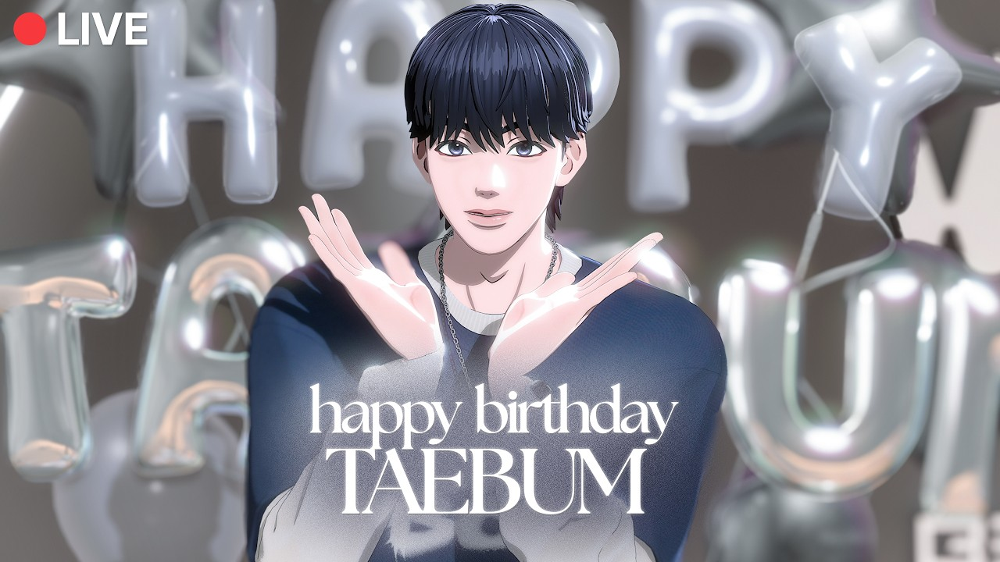

BEGRITZ分類：YOUTUBE直播日期：2026-10-27—BEGRITZ LIVE EP.11 老么TAEBUM鬼怪的生日派對BEGRITZ 字幕最後更新：2026-10-28在 YouTube 觀看原始影片×載入 YouTube 播放器 1010速度 0.75×1×1.25×1.5×2×00:00 / --:-- 繁中韓文雙語字幕大小20%字幕位置 原先位置懸浮字幕全螢幕劇院模式字幕外觀字幕樣式白字／黑底黑字／白底黃字／黑底白字描邊／無底底色透明度25%字幕高度2%恢復預設繁體中文點播放後，字幕會顯示在這裡韓文 分享這篇@fLINE𝕏 — 人喜歡這篇 這篇字幕對你有幫助嗎？ 0.0選擇 1～5 星 平均評分載入中展開雙語逐字稿 點擊查看完整內容雙語逐字稿雙語韓文繁中 自動跟隨播放文字大小 A−A＋重設字幕偏移（秒） 字幕比聲音早出現時填正數00:20:13안녕하세요. 안녕하세요.大家好 大家好00:20:18비그릿츠 태범입니다.我是BEGRITZ的TAEBUM00:20:22오늘은 박수부터 치고 시작하겠습니다. 저의今天先鼓掌再開始 我的00:20:27생일 저의 비그릿츠의 첫 생일이 다가왔어요. 여러분들 많이 와 주셔서生日 在BEGRITZ的第一個生日到來了 謝謝大家00:20:32감사합니다.來看我00:20:36와 범마 생일 축하한다. 여러분들 오늘네哇「BUM啊 生日快樂」大家今天00:20:43채트 엄청 빠르게 올라오는데 안녕하세요. 생일 축하해. 안녕.聊天室跑得好快「你好 生日快樂」你好00:20:47안녕. 태범화 생일 축하해 태범의 날. 와, 감사합니다.「TAEBUM 生日快樂 TAEBUM的日子」謝謝00:20:54네, 오늘, 네, 생일이었는데 제 저 또 오랜만에 혼자 방송하니까 약간今天是我的生日 好久沒自己直播00:20:59긴장되네요.有點緊張00:21:03여러분들 기대 많이 하하셨죠? 박수 생일 너무 축하해.大家都很期待吧?「鼓掌 生日快樂」00:21:13이렇게 하면 되겠다. 그러니까 같이 맞이하는 첫這樣就行了 這是我們一起迎接的第一個00:21:17생일이네요. 세범마 생일 축하해. 감사합니다.生日呢「TAEBUM 生日快樂」謝謝00:21:21오늘 많이 와 주셔 가지고 덕분에 행복한 생일이 될 거 같아요. 막내今天來了這麼多人 託大家的福 會是幸福的生日00:21:26생일인데 당연히 와야지. 존재 자체가 행복이야. 와 감사합니다.「老么生日當然要來 光是你的存在就很幸福」謝謝00:21:34아 맞다. 저희 그 베리즈 오픈했는데 다들 보셨어요?對了 我們Berriz開放了 大家看了嗎?00:21:3910월 27일 이제 나한테 공휴일이야.「10月27日從此是我的假日」00:21:43기억해 주세요. 10월 27일에 다들 쉬는 날 국가 공요일로 제 지정할 수請記住 讓10月27日成為大家都休息的國定假日00:21:49있게 하겠습니다. 태범 생일 축하해. 감사합니다.我會努力的「TAEBUM生日快樂」謝謝00:21:55네. 여러분 그 베리즈라고 저희 팬소통大家 我們的粉絲交流App Berriz00:21:59앱이 오픈을 했는데요. 많이 찾아와 주세요. 저희 다 내 멤버들이 오늘開放了 請多來玩 今天成員們用了之後00:22:03해보니까 소통에 목말라 있는 거 같더라고요. 그죠? 알림이 터졌죠?感覺都渴望交流 對吧? 通知炸開了吧?00:22:08베리즈 문찬 지분이 미쳤어. 제가 그만 좀 달라고「Berriz裡文燦的占比太誇張」我叫哥哥別再留言了00:22:12했어요. 그만 좀 달라고 했는데 형이 계속 달라고 아 계속 달더라고요.叫他別再留言 哥哥還是不停地回00:22:17베리즈 알람으로 전화온 줄 알았잖아. 아 진짜 형은 일일이 다 달아「Berriz通知響得像有人打電話」哥哥真的逐一00:22:22주시더라고요. 그 팬 사랑이 엄청납니다. 태범마 생일 축하해.回覆 對粉絲的愛很驚人「TAEBUM生日快樂」00:22:26다들 댓글 달아주고 하트 눌러주고 고마워. 아 당연합니다.「謝謝你們留言和按愛心」當然要啊00:22:32베리즈 맨날 맨날 갈게요. 저희 다들음我每天都會去Berriz 我們都00:22:36이런 뭐라 해야 되지? 이런 연걸고리가 있는 거를 되게 기다려一直期待有這種連結彼此的00:22:40왔거든요. 태범아 내가 한마디 알려 줄게.管道「TAEBUM 我教你一句話」00:22:43생일 축하해를 중국어로 생일 콰일러라고 한대요. 저 콰일러는「生日快樂的中文是生日快樂」我知道快樂00:22:48알아요. 예전에 새해 인사할 때 신년 콰일러 이거以前學新年問候時 學過新年快樂00:22:52배웠었는데. 아니야. 너무 좋았어. 큰 감동.「不是 很喜歡 超感動」00:22:57진지하게 도르신 분 있어서 인무 만개요. 네. 네. 요새 찬이형이〔部分原文不清〕最近CHAN哥00:23:02정말 남다른 행보를 보여주고 계십니다. 너무 무리하고 있어요.表現很不一樣 太拚了00:23:07근데 더 놀라운 거는 그게 자기가 즐거워서更讓人驚訝的是 他是因為自己開心00:23:13하고 있다는 거. 뭔가 성공하고 싶어서가 아니고 그냥 정말 그 행위才這麼做 不是想成功 而是那個行為00:23:17자체가 너무 즐거워서 그렇게 하고 계십니다. 생일 축하합니다.本身讓他很開心「生日快樂」00:23:23축하합니다. 사랑하는 태범이 감사합니다. 우리도 맨날 갈게. 네.「親愛的TAEBUM」謝謝「我們也每天去」好00:23:29많이 와주세요. 아, 형이 그 막 그 세바스찬 그걸請多來 哥哥一直推那個塞巴斯CHAN00:23:34엄청 밀던데요. 별명도 자꾸 세바스찬으로 바꾸면 안 되냐고還一直問暱稱能不能改成塞巴斯CHAN00:23:38해가지고 저희가 막 그렇게 하면은 형 이름이 세바스찬인 줄 알면我們就說 這樣大家以為哥哥名字叫塞巴斯CHAN00:23:42어떡해요라고 해가지고 안 된다고 했는데 그래도 계속 미시더라고요.怎麼辦 所以說不行 他還是一直推00:23:47주얼 두 개. 우와. 저 처음 받아봐요. 감사합니다. 아까兩顆寶石 哇 我第一次收到 謝謝00:23:53시작하기 전에 누가 또 주얼 그거 쏴 주셨더라고요.剛才開始前 也有人送寶石00:23:57감사합니다, 여러분. 네.謝謝大家00:24:00오늘 형들이랑 맛있는 거 사 먹을게요.今天會跟哥哥們去買好吃的00:24:03넌 존재 자체가 플러팅이야. 윤태범. 아, 그렇습니까? 감사합니다.「你的存在本身就是調情 尹TAEBUM」是嗎? 謝謝00:24:11저 잘 못 해 가지고. 네. 형들 보고 조금씩 배워 볼게요. 형들 중에我不太會 會看哥哥們慢慢學 哥哥之中00:24:16생일 축하한다고 제일 먼저 말해 준 사람 누구였어?「誰第一個跟你說生日快樂?」00:24:19형들 중에음 누구였죠?哥哥之中 是誰呢?00:24:24도하 형. 도하 형이 한 거 같은데요? 나머지는 안 한 거 같은데요?DOHA哥 好像是DOHA哥 其他人好像沒說?00:24:28아닌가? 베리즈에는 써 줬는데 또 안 했어요. 모르겠어요.不是嗎? Berriz有寫 但好像又沒說 我不知道00:24:36어, 좋아. 감사합니다. 파이팅. 감사합니다. 네. 와,好 謝謝 加油 謝謝00:24:43태범화 생일 축하해. 감사합니다. 태범마 생일 선물로 뭐 가지고 싶냐고「TAEBUM 生日快樂」謝謝「生日禮物想要什麼?」00:24:47하시는데 저는 저번에 그 X 스페이스 방송할 때 말씀드렸듯이就像上次在X SPACE直播時說的00:24:55오늘 많은 분들이 찾아오셔 주시기를 바라고 있었어요. 저의 생일 선물로.我希望今天有很多人來看我 當作生日禮物00:25:00저는 사실 그거 외에는 크게 바라는게 없습니다. 네.除此之外 沒什麼特別想要的00:25:07또 저희 저희 그룹이 많이 알려졌으면 좋겠어서 저는 그거를 가장 바라고我最希望我們團能被更多人知道00:25:12있어요. 도하 형이 최고다. 역시 도아 결혼하고 싶은 남자 1위. 네. 제가「DOHA哥最棒 果然是最想結婚的男人第一名」00:25:16저번 얘기했죠. 비그릿츠 내 신랑감 1위. 형들이上次說過吧 BEGRITZ裡最佳新郎人選第一名00:25:21선물 줬어? 말도 안 했는데 안 줬겠지?「哥哥們送禮物了嗎?」連祝福都沒說 怎麼會送呢?00:25:25줄리가 있나요? 저 앞으로 기대해 보려고요. 아직 서프라이즈 하고怎麼可能送 我會期待一下 想說還在準備驚喜00:25:30있겠거니 하면서 기대하고 있겠습니다. 저는 당신의 베리즈 채널을抱著這個想法期待「我加入你的Berriz頻道了」00:25:34가입했습니다. 아 땡큐. 범마 멋진 생일 보내길 말해. 또謝謝「BUM啊 希望你度過美好的生日」00:25:38한해가 시작이야. 감사합니다. 여러분 내년 내운년 생일에도 함께 해「新的一年又開始了」謝謝 明年後年的生日00:25:43주세요. 12시에 생일 해시태그 실트. 아, 진짜요?也陪我過吧「12點生日標籤上趨勢了」真的嗎?00:25:48진짜요? 그 정도예요? 저 몰랐는데. 오, 대박.真的嗎? 到那種程度? 我不知道 太厲害了00:25:54그거 사진 찍으신 거 있으세요? 와, 저 가질래요. 그 기념으로. 오늘 뭐有截圖嗎? 我想收藏紀念 今天吃了什麼呢00:26:00먹었냐면 제가 아까 그 베리즈 올렸던 어떤 분이 그 저 그我剛才發在Berriz 有人送了00:26:06축하 도시락을 보내 주셨어요. 그래서 그거 먹었어요. 너무 너무生日餐盒給我 所以吃了那個00:26:10맛있더라고요. 감사해요. 잘 먹었습니다.好好吃 謝謝 我吃得很開心00:26:13친구 열명 데리었어. 아, 감사합니다.「帶了十個朋友來」謝謝00:26:17잘 부탁드립니다. 비그릿츠 윤태범입니다.請多指教 我是BEGRITZ的尹TAEBUM00:26:22태범하생일 축하해. 감사합니다. 태범이 목소리만 듣는 것도 좋은데「TAEBUM生日快樂」謝謝「只聽聲音也很好」00:26:26확실히 얼굴 보니까 너무 좋다. 저도 또 오랜만에 이렇게 만나는 느낌이「但看到臉更開心」我也覺得好久沒這樣見面00:26:30드니까 너무 좋네요. 네. 오늘 저랑 신나게 놀아봅시다. 저 오늘 축하很開心 今天跟我盡情玩吧 我今天會收到00:26:36많이 받을 거니까 네. 많이 축하해 주시고요. 아, 그리고 이제 여기很多祝福 請大家多祝福我 對了這裡00:26:42조금 저번에 한번 보여 드린 적 있는데 여기 연습실이에요. 한번上次稍微給大家看過 是練習室00:26:47보여주시 보여 드릴게요. 연습실을 저희 직원분들께서 생일카페 느낌으로給大家看看 工作人員把練習室布置成生日咖啡廳00:26:52꾸며 주셨다고 해요. 그래서 여기 캐비닛부터 조금씩네所以從櫃子開始00:26:57소개를 해 드리도록 하겠습니다. 잠시만요. 저 여기 있어요. 네.一點一點介紹 等一下 我在這裡00:27:04자, 여기 보시면 저 공개되기 전에 저의 사진 그림이 먼저 있고요. 옆에這裡先放了我公開前的畫像 旁邊00:27:12보시면은 저번에 한글날에 찍었던 거랑 저희是上次韓文日拍的照片 還有我們的00:27:16커버 그리고 쇼츠 있습니다. 그리고 옆에 여기이 미공개 사진을翻唱與Shorts 旁邊想給大家看未公開照片00:27:23보여 드리고 싶어요. 저희가 한 번도 보여 드린 적 없던 저희가 극초기是從沒公開過的 最早期00:27:27여러분들한테 공개되기 전에 사진을 되게 많이 찍었는데 그때 사진이還沒跟大家見面前拍過很多照片 那時的照片00:27:31있습니다. 그 의상도 이거 처음 보시죠?在這裡 這套衣服也是第一次看到吧?00:27:34러브어택 추는 저 여기 형 형들이랑 장난친 것도跳《LOVE ATTACK》的我 還有跟哥哥們開玩笑00:27:39있고요. 여기 여기 장난친 거 슈퍼맨這裡也有 開玩笑的超人00:27:45찬니형이랑 장난 쳤고 여기 저번에 했던 PPT랑 제 커버跟CHAN哥鬧著玩 還有上次的PPT和翻唱00:27:53사진 한번네 풀 수 있는지 여쭤 보도록照片我會問問看00:27:56하겠습니다. 네. 그리고 여기 제 생일컵을 만들어能不能公開 這裡還做了我的生日杯00:28:02주셨어요. 너무 귀엽죠? 여기에 뭐 담아서 마시고 싶어요.很可愛吧? 想裝點什麼喝00:28:07아령은 도하 거죠. 제 건 아닙니다. 확실히 제 건「啞鈴是DOHA的吧」不是我的 確定不是我的00:28:11아니에요. 그리고 여기不是我的 然後這裡00:28:15잠시만요. 잠시만요.等一下 等一下00:28:21어, 정말 감사합니다. 정말 감사합니다.謝謝 謝謝00:28:25아, 감사합니다. 감사합니다.謝謝 謝謝00:28:29아, 감사합니다. 예. 치킨 사 먹으라고 또 보내謝謝 又送錢叫我買炸雞吃00:28:34주셨는데 네. 형들이랑 맛있는 거 사 먹도록 할게요. 같이. 네. 아,會跟哥哥們一起去買好吃的00:28:39감사합니다. 진짜. 자, 이어가도록 하겠습니다. 아,謝謝 繼續介紹00:28:44처음이라 이게 너무 너무 예, 너무 돈 많이 쓰신 아, 죄송합니다. 네.第一次遇到這種狀況 大家花太多錢了 對不起00:28:51여기 저 그 데자뷔 레코드판이這裡有《Deja Vu》的黑膠唱片00:28:57있어요. 네. 저가 첫 공개 때 됐던 그 그때 나왔던 저희 보이스 필름是我首次公開時 那支Voice Film00:29:05그때 레코드 판이 있고요. 옆에 저의 이거 뭐라 하죠?대 대판 뭐 그거를出現的唱片 旁邊還做了我的 那個叫什麼?00:29:13만들어 주셨고 옆에 밑에는 이제 폴라로이드 사진들이 놓여 있습니다.然後下面放著拍立得照片00:29:19네. 생일카페 컨셉이어서 이게 있는 거래요. 네. 그리고 옆에로가 보시면因為是生日咖啡廳概念 才放這些 往旁邊看00:29:27네. 이렇게 이쁜 풍선 10월 27일 해피 태범데이有漂亮氣球 10月27日 HAPPY TAEBUM DAY00:29:35이렇게 준비를 해 주셨습니다. 벌써 추억들이 새록새록 그죠? 저희這樣準備了 回憶一一湧現 對吧?00:29:41짧게 만난 거 같은데 또 벌써好像才見面不久 卻已經00:29:46잠시만요. 잠시만요.等一下 等一下00:30:37여러분 잠시만요. 조금만 기다려 주세요. 그 태범미가 반짝반짝. 아,大家等一下 稍等「TAEBUM閃閃發亮」00:30:43그러니까요. 제가 빨리 다시 돌아오도록 하겠습니다.就是說啊 我會盡快回來00:30:47무슨 일이에요? 방금 막 참여했는데. 아, 네. 걱정하지 마세요. 저 다시「怎麼了? 剛加入」別擔心 我可以00:30:53돌아갈 수 있으니까 죄송합니다. 조금만 기다려 주세요. 죄송합니다.回去 對不起 請等一下 對不起00:31:01이틈을 타서 소통을 볼까요?趁這時來看看留言吧00:31:06네. 짠. 제 돌아왔고요. 네.이어서回來了 繼續00:31:12이어서. 네. 이쪽이네요. 아이고 아이고 이쪽입니다. 해피 태범데이.這邊 是這邊 HAPPY TAEBUM DAY00:31:17여기에는 귀여운 저의 SD 이거 뭐라죠? 이거 팜플랫? 네.這裡有可愛的Q版我 這個叫什麼? 傳單?00:31:24등신대래요. 등신대. 네. 먼저 저 사진 한번 찍어도 될까요? 기념으로說是人形立牌 可以先拍照嗎? 當紀念00:31:31옆에 가서 같이 찍어야겠다.去旁邊一起拍吧00:31:36사진 찍어 주세요.請幫我拍照00:31:42네. 포즈 좀 다양하게 해 볼게요. 많이我會擺不同姿勢 請大家00:31:45여러분들 많이 캡처해 주세요.多截圖00:31:59네. 이렇게 사진을 찍어 봤습니다. 너무拍了照片00:32:03이쁘게 꾸며줬죠. 저기 뒤에 뭐 많아요. 뭐 붙은 것도 있고 되게布置得很漂亮吧? 後面好多東西 也貼了好多00:32:09많습니다.有很多00:32:13감사합니다.네 카메라는 들어와 주시고요.네謝謝 鏡頭請回來00:32:17또 이쁘게 꾸며 주셔 가지고 너무 잘 오늘 재밌게 방송 같이 해 볼게요.布置得很漂亮 今天一起開心直播吧00:32:24정말 귀엽다. 두 배로 귀여워요. 새범이 너무 아기 강아지야.「好可愛 可愛加倍 TAEBUM像小狗寶寶」00:32:30감사합니다.謝謝00:32:34아, 오늘 제가 어 저희 비그릿츠가 공개된지 얼마 안我們BEGRITZ公開沒多久00:32:40되는데 또 저희 생일 방송이 처음이잖아요. 그러니까 조금這又是第一次生日直播00:32:47되게 새롭고 뭔가 앞으로도 계속 기억나는 그게 될 거 같아요.很新鮮 感覺以後也會一直記得00:32:51여러분들 함께 해 주셔서 너무 감사합니다. 앞으로도 여러분들이랑謝謝大家陪伴 希望以後也能00:32:56계속 생일 파티 같이 어, 하고 싶어요.繼續一起辦生日派對00:33:01잘 부탁드리겠습니다.請多指教00:33:07오늘 하고 싶은 거 다 하라고. 아, 저 네. 재밌는 거 많이 준비했으니까「今天想做什麼都做」準備了很多好玩的00:33:12많이 봐 주세요. 세범미 생일을 같이 맞이할 수 있어서請多看「能一起迎接TAEBUM生日」00:33:18너무 행복해. 해범이 하기 전에 긴장했냐고? 아.「很幸福」問我直播前緊不緊張?00:33:22아, 아무래도 이게 좀 솔로 방송을 안 한 지점 됐잖아요. 그러니까 좀畢竟有一陣子沒自己直播00:33:28긴장이 되긴 하더라고요. 또 저 혼자 계속 이거를 채워 나가야 되다 보니까會緊張 因為得自己撐起整場00:33:34조금 긴장도 되고 또 뭔가 의미 있는 날이어서 더 그런 거 같아요.又是有意義的日子 所以更緊張00:33:41저 오늘 생일이니까 어, 끝나고 형들이랑 먹고 싶은 걸 생각해 봤는데今天生日 想了直播後要跟哥哥們吃什麼00:33:45일단은 케이크 케이크 먹고 싶어요. 첫 번째로 역시 또 디저트가 좋아서首先想吃蛋糕 果然喜歡甜點00:33:52그거에 생각났네요. 윤태범 생일 파티 스스무하게가 보자고. 아 20년이나所以先想到這個「尹TAEBUM生日派對順順地開始吧」 〔部分原文不清〕00:33:57감사합니다. 어 반짝반짝 빛나는 태범이 생일 줄까요?謝謝「閃閃發亮的TAEBUM生日快樂」00:34:01아, 감사합니다. 감사합니다.謝謝 謝謝00:34:07감사합니다. 오늘 게스트는 없습니다. 네, 오늘은 저 혼자 할 거예요.謝謝 今天沒有來賓 今天我自己播00:34:12네, 오늘은 제 생일이니까 저 혼자 하겠습니다. 태국에서 생일 축하의因為是我生日 所以自己播「從泰國祝你生日快樂」00:34:17최고의 날들이 되길 바래 생일 축하해. 아, 감사합니다. 또 멀리서「希望是最棒的一天 生日快樂」謝謝 從那麼遠00:34:21항상 응원해 주셔서 너무 감사합니다. 태범이 어떤 케이크 좋아해? 저는一直支持我 謝謝「TAEBUM喜歡什麼蛋糕?」00:34:27생크림 생크림 과일 케이크가 제일 좋습니다. 과일을 좋아해서 과일이最喜歡鮮奶油水果蛋糕 因為喜歡水果00:34:32아주 많이 들어간 그런 간 케이크를 먹고 싶어요. 범미 방송 대박 대박.想吃放很多水果的蛋糕「BUM直播大發」00:34:40아, 너 긴장하면 누나도 긴장데. 긴장하지 마세요.「你緊張 姊姊也緊張」不要緊張00:34:44맞다. 디저트 얘기하니까 생각나는데 꿈빛 파티시엘對了 說到甜點 想到《夢色蛋糕師》00:34:49아세요? 제가 첫 방송 때 얘기했었는데 꿈빛 파티시엘을大家知道嗎? 首播時說過很喜歡00:34:53되게 좋아한다고 했잖아요. 그래서 제가 꿈빛 파티시엘로 한번 변신을所以我準備變身成《夢色蛋糕師》00:34:59하려고 준비한게 있습니다. 뭔지 궁금하시지 않아요?為此準備了東西 好奇是什麼吧?00:35:06꿈빛 파티시엘 춤춰 주는 거야? 뭐 그럴 수도 있고요.「要跳《夢色蛋糕師》嗎?」也有可能00:35:13그러면은 제가 포크를 하나 준비했어요.我準備了一支叉子00:35:19근데이 주문을 해야지이 포크가 나온대요. 그래서 제가 귀여운 주문이要唸咒語 叉子才會出現 所以要求我00:35:26요청돼 가지고 한번 해 보겠습니다.唸可愛的咒語 我來試試00:35:36야 윤딸기 너 그렇게 하면 파이 1등까지 못 해. 아 맞다.「喂 尹莓 妳這樣沒辦法當派第一名」對喔00:35:42이게 제가 주문을 하면은 그게 어느 정도 성도 수치에 도달해야 포크를我唸的咒語要達到一定程度的誠意00:35:48가져다 주신대요. 주문을 한번 해 보겠습니다.才會把叉子拿來 試著唸咒語00:35:59뿌삐니 포크 나와라.〔咒語音節不清〕叉子出來吧00:36:09나와라.出來吧00:36:12왜요? 왜 안 주세요? 아 충분히 노력했는데 왜 안為什麼不給我? 已經很努力了00:36:18주세요?네為什麼不給我?00:36:22할게요.我會唸00:36:30삐삐뽀니 포크 나와라. 나와 주세요.〔咒語音節不清〕叉子出來吧 請出來00:36:38주세요 빨리.快給我00:36:42아 왜요? 아 나왔습니다. 나왔습니다.為什麼? 出來了 出來了00:36:47아 여러분들 이거 받기 힘드네요. 제 건데大家 要拿到好辛苦 明明是我的00:36:52주문이 푸피폰이 포크해요.네 무슨 뜻인지는 모르겠어요. 그냥 귀여운咒語是〔音節不清〕叉子 我也不知道意思00:36:57그건가 봐요. 빨리 줘요. 우리 애 울어요. 저 울었습니다.大概就是可愛的意思「快給他 我們寶寶要哭了」我哭了00:37:02근데 엄청 크죠. 너무 귀여워요. 이걸로 이렇게很大吧? 好可愛 可以拿這個00:37:07케이크 해 가지고 이렇게 먹고叉蛋糕吃00:37:12여기 보시면은 발바닥도 있어요. 너무 귀엽죠? 완전 귀엽죠, 여러분?這裡還有腳掌 好可愛吧? 超可愛吧?00:37:20착착 이루빈보다 클듯 그럴 수도 있어요.「好像比LEE LUBIN還大」有可能00:37:25형이 한 잠깐만 그 멀리서 한번 보여 주실래요? 루빈이형이 한이哥哥大概 等一下 可以拍遠一點嗎? LUBIN哥大概00:37:34정도這麼高00:37:39여러분 아직 이거 말고 하나 더 있는데요. 리본도 달아 주실래요?還有另一樣 可以幫我戴蝴蝶結嗎?00:37:46리본 달아 주세요. 짠請幫我戴上 蹬蹬00:37:51리본까지 하니까 진짜 약간 그런 느낌 나지 않아요? 저 그 감딸기 감달기加上蝴蝶結 有那種感覺吧? 我是 那個莓莓00:37:56맞나? 딸기 느낌 나죠?是莓莓嗎? 有莓莓的感覺吧?00:38:02루빈. 네. 태범 씨 잠시만요. 루빈아 억울하면 나와줘라. 루빈이「LUBIN TAEBUM先生等一下 不服氣就出來吧」 LUBIN00:38:06지금 보고 계실 텐데.이 포크로는 케이크를 한 입에 다 먹을應該正在看 用這支叉子 感覺能一口吃完整個蛋糕00:38:10수 있을 것 같아요. 그죠? 이렇게 통으로 찍어 가지고 이렇게 먹으면對吧? 這樣整個叉起來吃就好00:38:15됩니다. 딸기야. 태범미가 선물이다. 네. 제가 여러분들의 선물입니다.「莓莓啊 TAEBUM就是禮物」我是送給大家的禮物00:38:20마법 소녀 같다. 그죠? 오늘 그렇게 또 준비를 해 주셨네요. 한 번에「像魔法少女」對吧? 今天準備了這些00:38:26많이 먹을 수 있겠어? 귀엽네. 완전 많이 먹을 수 있어요. 범딸기.「能一次吃很多 可愛」可以吃好多 尹莓00:38:33너 딸기가 아니라 꿈파에 요정들려야? 아, 맞다.요 정도 있었지. 저는「你不是莓莓 是《夢色蛋糕師》裡的精靈吧?」對喔 也有精靈00:38:37요정이 더 좋은 거 같은데요. 네.요 정도 이렇게 막 도와주잖아요.我覺得精靈更好 會像這樣幫忙00:38:43윤딸기. 저 오늘은 윤딸기라고 불러 주셔도 됩니다.今天也可以叫我尹莓00:38:48저 어때요? 좀 꿈피 꿈빛 파티시엘 갔네요. 그러면은如何? 像《夢色蛋糕師》吧? 那麼00:38:54제가 또 사진을 남겨야겠죠. 오늘 최대한 사진을 많이 남겨 보려고要留下照片 今天想盡量多拍00:38:58하거든요. 그래서 한번 사진 찍어 볼게요.所以拍照吧00:39:08어, 어디서 찍지? 여러분들 어디서 찍을까요?在哪裡拍? 大家要在哪裡拍?00:39:12일단은 저 캐빈에 아니다. 여기 등신대 앞에서 찍어야겠다. 네.先在櫃子 不對 在立牌前拍吧00:39:20네. 좀 더 정면으로 와 주세요. 제 생일은 얼마 전에 지났지만 저도請再正面一點「我生日剛過 但也想收到TAEBUM這份禮物」00:39:25태범이라는 선물 받고 싶어요. 저한테도 주세요. 네. 여기「也送給我」我就在這裡00:39:30있습니다.在這裡00:39:33여기 있습니다. 네. 사진 한번 찍어 볼게요.在這裡 拍照吧00:39:39자, 어떻게 찍을까?要怎麼拍呢?00:39:43이렇게 먼저 찍을래요. 짠.先這樣拍 蹬蹬00:39:50찍고 아 등신대 포크 오케이 오케이 오케이拍完 立牌 叉子 好好好00:40:05이렇게도 찍고 혹시 방금 태어났나요? 아닙니다. 저 그래도 몇백 년 전에也這樣拍「你剛出生嗎?」不是 我可是00:40:10태어난 도깨비입니다.이 포크 너무 귀엽죠? 그리고 이렇게幾百年前出生的鬼怪 叉子很可愛吧? 然後00:40:15해서這樣00:40:21이것도 찍고也拍一下00:40:25이렇게도 찍 찍어 볼게요. 등신대 옆에 앉아서 찍어 볼까요?也這樣拍 要坐立牌旁邊嗎?00:40:31그럴까요? 아, 이렇게 해 가지고要嗎? 這樣00:40:36얘랑 이렇게 같이 찍을게요.跟它一起拍00:40:44방금 태어난 아기 같아. 아이고. 네. 이렇게「像剛出生的寶寶」哎唷 這樣00:40:50네. 귀여운 사진을 많이 남겨 봤습니다. 감사합니다.留下好多可愛照片 謝謝00:40:55혹시 저희 포크로 공격당하는 중인가요? 저는 이걸로 형들을 한번「我們正被你的叉子攻擊嗎?」我倒是想拿這個00:40:59이렇게 괴롭혀 보고 싶긴 해요.欺負哥哥們00:41:04이렇게 어허 주얼 감사합니다.這樣 謝謝寶石00:41:10감사합니다. 여러분 포크를 마이크 아 이것도 좋은 아이디어인데요. 오늘 또謝謝「叉子當麥克風」好主意 今天00:41:16제가 노래를 하게 된다면 한번 그렇게 해 보겠습니다. 막내의 반란 형들如果唱歌 就那樣試試「老么的反抗 叉哥哥們吃」00:41:22찍어 먹어.「叉來吃」00:41:26형들이 이거 되게 탐내할 것 같은데哥哥們好像會很想要這個00:41:35그러면은 제가 여러분들이 아 좀 예측하셨겠지만大家大概猜到了 我有00:41:41준비한게 있어요. 네. 꿈빛 파티시엘의 챌린지를準備東西 準備了《夢色蛋糕師》的挑戰舞蹈00:41:45준비했습니다. 보여 드릴까요?要看嗎?00:41:51막내는 막내다. 막내 온탑입니다. 제가「老么就是老么 老么至上」我是00:41:56막내 온태범老么On TAEBUM00:42:00그러면은 꿈빛 파티시엘 챌린지 보여 드릴게요.那就表演《夢色蛋糕師》挑戰舞蹈00:42:06아 이거 치우 치워야겠다. 잠시만요.要把這個移開 等一下00:42:12여기 두고 얍.放這裡00:42:16자, 한번 해 보겠습니다.來試試00:42:22네. 음악 틀어주세요.請放音樂00:42:54감사합니다.謝謝00:42:58어때요?如何?00:43:03아이 잘한다. 엄마 여기가 애니 속인가요?「好棒 媽媽 這裡是動畫裡嗎?」00:43:09저 윤딸기예요. 윤딸기. 태범이 춤 보고 내가 도깨비가 될 뻔했다.我是尹莓「看TAEBUM跳舞 差點變鬼怪」00:43:15네가 내 파티식이고 내 케이크 행복이다. 아 다들 너무 좋은 마 해「你是我的糕點師 我的蛋糕幸福」大家說好多好話00:43:19주시는데 오늘 누나들 기절한다.「今天姊姊們要昏倒了」00:43:25제가 원가운 어 원가운시는구나.〔原文不清〕00:43:32태범이 귀여워서 잡아먹어. 아, 먹으시면 안 돼요.「TAEBUM太可愛 想一口吃掉」不能吃我00:43:38태범이 생일인데 내가 이렇게 행복해도 되는 거야. 그럼요. 여러분, 제「是TAEBUM生日 我這麼幸福可以嗎?」當然 大家00:43:42생일을 함께 해 주시기 때문에 같이 행복하면 좋죠.一起陪我過生日 一起幸福很好00:43:48아들 재롱잔치 물어온 엄마들 그니까요. 다들 너무 너무 귀엽게 봐「媽媽們來看兒子表演」大家都覺得很可愛00:43:52주셔 가지고 이거 너무 감사한데요. 이번에 이거 포크 들고 한번 해볼 해謝謝 這次拿叉子再跳00:43:55볼게요. 갑자기 이거 해 보고 싶어졌어요.突然想拿這個試試00:44:00한번 포크 들고 해 볼게요. 여러분들 잘 봐 주세요.拿叉子跳跳看 大家好好看00:44:06이거 되게 쓸모가 많네요. 네. 한번 해보겠습니다. 음악這個用途好多 那來試試 音樂00:44:11주세요.請放音樂00:44:42뭐야? 감사합니다.什麼啊? 謝謝00:44:50와 감사합니다. 제 여러분謝謝 大家00:44:55아유 제 생일에 이렇게 찾아와 주신 것만으로도 감사한데生日能來看我 就已經很感謝了00:45:03너무 감사합니다. 너무 감사합니다. 생일 축하해 주셔서 너무 감사합니다謝謝 謝謝大家祝我生日快樂00:45:08여러분. 너무 네. 저는 마음만으로도 너무 감사하는데 이렇게 아,光是心意 我就很感謝了 這樣 謝謝00:45:13감사합니다. 정말 어떡해요? 막 너무 감사해서怎麼辦 太感謝了00:45:20이거를 하고 싶은데. 네. 근데 태범이 춤마다 그 분위기 잘很想表達「TAEBUM每支舞都能把氣氛00:45:26살린다. 라즈야. 아이고 아닙니다. 감사합니다. 이거 원래 제가 좀이抓得很好」沒有啦 謝謝 我本來就00:45:31노래를 좋아하다 보니까 되게 요거에 잘 빠져들게 됐어요.喜歡這首歌 所以很能投入00:45:36태범마 리보는 직접 달고 싶다고 한 거야? 아네 제가 원래는 여기에 작게「蝴蝶結是自己說想戴的嗎?」原本想請他們在這裡00:45:41달아 달라고 했는데 이게 큰게 더 귀여울 것 같다 하셔서 이렇게 크게戴小小的 但說大的更可愛 所以做這麼大00:45:45달아 주셨어요. 예전에 찬니형 여기 단 거랑 비슷하지 않아요? 태범이跟以前CHAN哥戴在這裡的很像吧?「TAEBUM00:45:50프로다 그런가요? 감사합니다. 윤태범很專業」是嗎? 謝謝「尹TAEBUM00:45:55미쳤다. 아이고 감사합니다. 이걸 준비해 온게 귀엽다고요?네太厲害」謝謝「準備這個很可愛」00:46:02당연히 이거는 꿈빛 파티시엘랑은 이제 세트기 때문에當然 這跟《夢色蛋糕師》是一組的00:46:07태범이 로블록스 댄스 학원에서 배워온 거야.「去Roblox舞蹈學院學的嗎?」00:46:12여러분 그 제가 나중에 베리즈에 올릴게요. 제가 추천해 드리고 싶은之後會發在Berriz 有個想推薦給大家的00:46:17그 댄스 하는 그거 있거든요. 그 안에 내부 게임에 그거 한번 추천해跳舞遊戲 Roblox裡面的遊戲 會推薦給大家00:46:23드릴게요. 왕크왕귀. 그렇죠? 이것도 왕크왕귀.超大超可愛 對吧? 這個也是超大超可愛00:46:30어, 주얼 감사합니다. 감사합니다.謝謝寶石 謝謝00:46:35리본이 딸기 같아서 케이크가 춤추는 거 같아. 기워. 오늘 약간 제가 그「蝴蝶結像草莓 感覺蛋糕在跳舞 可愛」今天我00:46:40선물 포장 그 자체인 컨셉입니다.走的是禮物包裝本身的概念00:46:46세범미의 생일을 축하해. 아유, 어서 오세요. 아직 시작도 안 했어요.「祝TAEBUM生日快樂」歡迎 我們還沒正式開始00:46:53네. 프로듀싱에서 그런가? 본인한테 찰떡 찰떡인 거 다 가져오네.「因為會製作 所以都挑很適合自己的」00:47:00저희 멤버들 모두가 자신한테 잘 어울리는 걸 너무 잘 알고 있죠?我們成員都很清楚自己適合什麼00:47:04네. 저도 그거에 맞춰서 좀 더 노력해야겠어요. 아, 더 찰떡인 거를我也得配合這點更加努力 想找更適合的00:47:09찾고 싶어요.東西00:47:13나 태범미 독에 로블록스 설치했어. 어, 진짜요? 저희「因為TAEBUM安裝了Roblox」真的嗎? 希望00:47:18빨리 같이 한 할 수 있는 날이 오면 좋겠는데 많이 많이들 이렇게 해能早點一起玩 大家都去玩00:47:23주셨더라고요. 저 그래서 되게 기분 좋았어요. 저 저 아이디도 새로讓我很開心 我也新創了帳號00:47:27만들었어요. 주얼 감사합니다.謝謝寶石00:47:32감사합니다. 찬니가 세바스찬 컨셉 잡은님. 아, 근데 형은 너무 심했.謝謝「CHAN哥走塞巴斯CHAN概念」但哥哥太誇張00:47:37심해요. 막 너무 저는 보다가 껐어요. 신이 형이랑 저는. 아,太誇張 我跟SINI哥看到一半關掉了00:47:42이제 더 이상은 못 보겠다 하고 도화형은 비명지르면서 계속 보시긴說不能再看了 DOHA哥則邊尖叫邊繼續看00:47:46하더라고요.他一直看00:47:50엄마 월급 전부 태범해 줄게. 안 돼요. 안 돼요. 안 돼요.「媽媽薪水全部給TAEBUM」不行 不行 不行00:47:53아끼세요. 그러시면 안 됩니다.省著花 不能那樣00:47:59네. 네. 여러분들 오늘 여러분들 제 생일 파티에 와 주셨으니까 오신大家今天來參加我的生日派對 所以為了紀念00:48:03기념으로 제가 선물을 또 준비했어요.이 꿈비파트 챌린지는我也準備了禮物 剛才《夢色蛋糕師》挑戰舞蹈00:48:08선물까지도 아니었고. 네. 혹시 저번 보이스랑 라이브 방송 기억하시나요?還不算禮物 大家記得上次聲音直播嗎?00:48:15X에서 한 거. 찐 연하가 보는 찬이의 연하남친在X開的「真正年下看CHAN的年下男友00:48:20어땠어? 아覺得如何?」00:48:24그 뭐라 될까요? 그 찬이형은 조금 제가怎麼說呢? CHAN哥在我00:48:30봤을 때는 너무 좀 자극적이었던 거 같은데요.看來有點太刺激了00:48:34근데 거기서 나오는 그 진짜 연화스러운 그게 있긴 했어요.但其中確實有真正像年下的感覺00:48:42찬니가 수사하는 날 아지트가 떠들썩해지는 날 너무 심했어요. 어〔部分原文不清〕基地鬧哄哄的日子 太誇張了00:48:47채팅 위에 조금만 올려 주실래요? 너무 빨리 오게 올라가 가지고 조금만可以把聊天室往上滑一點嗎? 跑太快了00:48:50더 올려 주세요. 엄마인 건 영광. 아닙니다.再往上「身為媽媽很光榮」不是00:48:56아닙니다. 엄마 아니에요. 누나들이죠. 누나들. 네.不是媽媽 是姊姊們00:49:02찬이 연하록 최고지. 찬이는 오빠이고 싶어 하는데 솔직히 연화가 어울리긴「CHAN想當哥哥 但老實說年下更適合」00:49:07해. 그렇죠. 찬 찬이형이 조금 어른스러워對 CHAN哥看起來成熟00:49:13보이는데 이제 좀 사고 뭉치이긴 해 가지고但也是個闖禍精00:49:17이게 겉만 의젓한 그런 연화 또 굉장히 또 지금 환숨 쉬고 있을就是外表穩重的年下 他現在大概在嘆氣00:49:25것 같은데 찬이는 그냥 연소 연상 호소인일「CHAN只是堅稱自己是年上」00:49:29뿐이야 그니까요. 완전 넌 어른스럽고 어제 태어난 거 같아.就是說啊「你很成熟 也像昨天剛出生」00:49:35어 근데 여러분들 그게 공존할 수 있는 건가요?大家 這兩個可以同時存在嗎?00:49:40왜 안 믿다고 하는지 너무 알겠더라. 그죠? 저도 그걸 보면서 힘들긴「完全懂為什麼說討厭不起來」對吧? 雖然看得辛苦00:49:45했으나 어네 밉진 않았습니다.但不討厭00:49:54또 여러분들 좀 궁금하신 거 있어요? 보이스 라이브 할 때.還有什麼想問的嗎? 關於聲音直播00:49:59그리고 그 찬니형이 어제 할 때 중간에 꺼졌어요. 근데 그게 사실은CHAN哥昨天播到一半斷掉了 其實00:50:07저 때문이었어요. 제가 형거 들으려고 들어갔는데是我害的 我想進去聽哥哥的直播00:50:11그 비그릿츠 계정으로 들어가 가지고 그 형거 막 왜 안 들리지 하면서結果用了BEGRITZ帳號 一直按 想說怎麼沒聲音00:50:17계속 누르다가 꺼져 버렸더라고요. 힘들어하면서 일단 다 같이 듣고 있긴結果就關掉了「看得辛苦還是大家一起聽」00:50:23하구나. 네. 그렇습니다.是的00:50:27안보고 싶다고요? 아, 한번. 네.「想看」好 試一次00:50:39우리 아기가 실수할 수도 있지. 아유, 이해해 주셔서 감사합니다.「我們寶寶也會犯錯」謝謝理解00:50:42어제 저는 조금 식은땀 흘렸습니다.昨天我有冒冷汗00:50:46새범아 혹시 시간 괜찮으면 바베이지 한다고 해야 되지. 아, 하드세요.〔點歌部分原文不清〕好 請接收愛心00:50:52네.好00:51:08여기까지 하겠습니다. 제가 진짜 좋아하는 노래라서 이게 입에 남아到這裡 我很喜歡這首歌 所以一直留在嘴邊00:51:12있어요. 태범이 하나 문자 가기 좋다.「TAEBUM〔部分原文不清〕」00:51:17태범이 다음엔 세바스찬 스타일도 한번 해 보라는데. 아, 모르겠어요.「TAEBUM下次也試試塞巴斯CHAN風格」我不知道00:51:22할 수 있을까요, 제가? 아, 그래 가지고 음, 제가 원래我做得到嗎? 所以我本來00:51:29하려던 얘기는 뭐였냐면 보이스 라이브에서 제가 막 계속 여러분도想說的是 聲音直播時 我一直問00:51:34혹시 저한테 듣고 싶은 노래 없으세요라고 했잖아요. 그때 뭔가大家有沒有想聽我唱的歌00:51:39여러분들이 직접 골라 주신 노래를 생일 때 하면은 의미 있지 않을까覺得生日唱大家親自選的歌 應該很有意義00:51:43해가지고 제가 거기 있는 걸 다 하고 싶었는데 그중에서 좀 제가 잘 아는本來想全部都唱 但從中挑了我比較熟的00:51:49노래로 골랐어요. 그래서歌曲00:51:54여러분들한테 좀 하고 싶은 얘기기도 하고 그래서 아이유 선배님의也是想對大家說的話 所以準備IU前輩的00:51:59밤편지라는 곡을 들려 드리려고 해요. 아주 짧게. 네. 그때 어떤 분이 해《夜信》 想唱一小段 當時有人00:52:04달라 하셔 가지고 태범아 근데 우리가 계속 널 아기라 부르는 건 괜찮아點了這首「TAEBUM 一直叫你寶寶可以嗎?」00:52:10혹시? 아니면 산이처럼 오빠가 좋아. 아 저는 저는 아기가 좋아요.「還是像CHAN想被叫哥哥?」我喜歡當寶寶00:52:16뭔가 뭔가 그有種00:52:20책임감이 덜해서 더 좋은 거 같은데 뭔가 저는 편하게 이렇게 어리경 피울責任感比較少的感覺 可以自在撒嬌00:52:26수 있고 이런게 더 좋은 거 같은데. 헤버아 노래할 때와 평소 말할 때我比較喜歡這樣「唱歌和平常說話00:52:31목소리가 왜 이렇게 다른 거야? 어 그래요?聲音怎麼差這麼多?」是嗎?00:52:35그런가요? 제가 목 이렇게 말할 때는 조금 더 이렇게 캄돼서 그런 거是這樣嗎? 說話時比較平靜的關係吧00:52:39같은데 노래할 때는 조금 더 어 저도 잘 모르겠어요. 왜 왜지?唱歌時比較 我也不知道 為什麼呢?00:52:45윤태범 넌 영원히 아기야. 아기가 좋아. 나도 아기 태범이가 좋아.「尹TAEBUM你永遠是寶寶 我也喜歡寶寶TAEBUM」00:52:50감사합니다.謝謝00:52:53진짜 아긴 다르다. 그러면은 노래 들려 드릴까요? 여러분들 제 마이크를「真正的寶寶不一樣」那唱歌吧 用我的麥克風00:52:57쓸까요? 아니면 포크를 쓸까요? 뭘 뭘로 할까요? 보고 싶으신 거還是叉子? 要用哪個? 有想看的嗎?00:53:01있어요?想看什麼?00:53:04아기계는 다르네.「寶寶的次元不一樣」00:53:08또 제가 막내인 이상 그런 거를 네. 당연히既然我是老么 當然00:53:15즐겨야죠. 이거 즐겨야죠. 포크 포크가 많습니다. 네. 포크로要享受這點 叉子比較多00:53:19가겠습니다.那就用叉子00:53:23그러면은 네. 물한 하고 잠시만요.喝口水 等一下00:53:30여러분 오랜만에 혼자 하려니까 되게 어려운데요.好久沒自己直播 好難00:53:40조금 막 어리버리 하더라도 예 부탁드리겠습니다.就算有點迷糊 也請大家多包涵00:53:48그러면은 노래 들려 드릴게요.那就唱歌給大家聽00:53:52노래 주세요.請放音樂00:53:56아, 이렇게 할래?要這樣嗎?00:55:54감사합니다. 아주 짧게 준비했어요.謝謝 準備了一小段00:56:00어떠셨나요? 또 칭찬을 해 주시죠. 빨리. 노래覺得如何? 快再稱讚我「唱歌時00:56:06부를 땐 아가 아니라서 미치네. 아 그래요?不是寶寶 受不了」是嗎?00:56:10노래 부릴 때 확실 좀 그게 갭이 있어 보이나 봐요. 다행이다. 좀唱歌時確實有反差的感覺 幸好00:56:15반전력이 있어야죠. 태범미는 천사다. 아이고 극찬 감사합니다. 착하게 살기要有反轉魅力「TAEBUM是天使」謝謝這麼稱讚00:56:21잘했다. 윤태범이랑 천사도 만나보게. 만나보고. 저도 여러분을 만나서 너무「幸好好好做人 才能遇到尹TAEBUM這位天使」我也00:56:27좋습니다. 정말 오늘 찾아와 주셔서 너무 감사해요.很開心遇見大家 謝謝今天來看我00:56:31이제 칭찬 당당히 요구하네. 아 어차피 저번에 한번 얘기한 이상네「現在理直氣壯討稱讚」上次都已經說過了00:56:37숨기지 않기로 했어요. 오늘 악몽이라는 단어가 세상에서所以決定不隱藏「今天惡夢這個詞從世上00:56:42사라졌다는 거 아니 태범아 그런 그런 말을 해 주시다니消失了」居然這樣說00:56:48감사합니다. 태범이 목소리 새벽을 머금었어.謝謝「TAEBUM的聲音有凌晨的感覺」00:56:53복복 5천만 번 해 줄 거야 사랑합니다 아기 감사합니다.「會親你五千萬次 我愛你寶寶」謝謝00:57:00일반적인 말하기를 시작할 때 더 급픈 목소리로 말할 때. 아, 말할 때가「平常開口說話 聲音更低沉」說話時00:57:05좀 더 깊게 난다는 거죠? 어, 저가 생각해도 그런 거 같아요. 노래할 때比較深沉嗎? 我也覺得是這樣 唱歌時00:57:11조금 더 아, 이쁘게 그렇게 톤이 잡히나 봐요.音色好像會更漂亮00:57:16너무 귀여워. 요구해. 100번 해 줄게. 알겠습니다. 더 적극적으로「太可愛了 要求吧 會誇一百次」知道了 會更積極00:57:21요구할게요. 우리 우리의 매네라 안에 다들要求「我們的MENHERA」大家00:57:25압도적인 칭찬만 부탁드립니다. 아이고 감사합니다.請用壓倒性的稱讚 謝謝00:57:29어쩌다가 제가 또 그런 매네랄라는 칭호를 얻게 되는지 모르겠지만네不知道怎麼又得到MENHERA這個稱號00:57:34어쨌든 뭐 이뻐해 주시니까 좋네요.네但被喜歡就很開心00:57:39근데 이렇게 너무 짧게만 노래를 하면 아쉬운 거 같아서 이번에는 제대로不過只唱這麼短 有點可惜 所以這次00:57:43들려 드릴까 하는데요. 여러분들 이번에는 제가要完整唱給大家聽 我這次00:57:50직접 준비한 노래가 있어요. 바로 무슨 노래냐면 라디 선배님의有自己準備的歌 是Ra.D前輩的00:57:57아임 인 러브라는 노래입니다.《I'm In Love》00:58:02여러분들한테 그 사랑한다는 마음을 들려 드리기 위해서 준비한 노래예요.為了傳達愛大家的心意 所以準備這首00:58:07그래서 이번에는 조금 길게 들려 드리도록 할게요. 태범 님 해외這次會唱長一點「TAEBUM可以為海外00:58:12팬들을 위해 영어로 한 문장만 말씀해 주실 수 있나요? 영어 영어로 뭐라고粉絲說一句英文嗎?」英文 要說什麼?00:58:18얘기해야 될까요? 영어 I love you guys 땡큐 땡큐 for 또我愛你們 謝謝 謝謝大家00:58:25치 감사합니다. 어 주알 감사합니다.謝謝 謝謝寶石00:58:30감사합니다. 난 그냥 포인러謝謝〔部分原文不清〕00:58:35벌써 좋다고 하시네요. 이번에는 여러분 아까 포크로 불렀으니까已經說喜歡 這次剛才用過叉子00:58:38마이크로 갈게요.네 마이크 송환.네 네. 여러분들 이거 보세요. 제가所以換麥克風 召喚麥克風 大家看00:58:45첫방 때 썼던 솜사탕 마이크 귀여운 이렇게 그라데이션 이렇게 있습니다.首播用的棉花糖麥克風 有可愛的漸層00:58:52네. 물 한 목은 마시고 시작할게요.喝口水再開始00:58:57포크 내동댕이 이게 생각보다 무거워요, 여러분.「把叉子摔在地上」它比想像中重00:59:02되게 커 가지고.因為很大00:59:08잠깐만요. 목 좀 가다듬을게요.等一下 清清喉嚨00:59:14루빈이 바닥에 누워 있네. 루빈이 포크가 된 건가요? 진짜「LUBIN躺地上 LUBIN變叉子了嗎?」真的00:59:21여러분들 제 볼 때마다 늘 놀린 아니 놀라는데 그 조롱이 장난이每次看你們都會驚訝 調侃得很厲害00:59:26아니십니다. 지능적으로 아주 재밌게 조롱해 주시는很有技巧 又有趣地調侃00:59:30거 같아요. 추파츄스.「加倍佳」00:59:34네. 너 운동하기 싫어서 내려놨지. 에이,「你不想運動才放下吧」不至於吧?00:59:38설마요? 그러면은 노래 들려 드리도록怎麼可能 那就唱歌00:59:42하겠습니다. 음악 주세요.給大家聽 請放音樂01:01:10여러분들 저의 첫 생일 파티에 와 주셔서 너무 감사합니다.네謝謝大家來參加我的第一場生日派對01:01:16평생 잊지 않을게요. 감사합니다. 오늘 행복한 하루 보내도록一輩子都不會忘記 會度過幸福的一天01:01:21하겠습니다.謝謝01:03:03이렇게 여러분들한테 전하는 노래까지 하니까 정말 제 생일인 게唱了想傳達給大家的歌 才真的感受到生日01:03:08실감이 납니다. 오늘 진짜 약간 실감이 안 났거든요.今天原本沒什麼實感01:03:12네. 음. 태범미 사랑해. 저도 사랑이다.「TAEBUM我愛你」我也愛你01:03:16태범미가 불안형이어도 좋아. 그냥 옆에 붙어서 함께 계속 흔들리며「就算你是焦慮型也喜歡 想陪在身旁一起搖晃01:03:20나아가고 싶다. 저는 이렇게 누가 이렇게 끌어주면 그러지 않습니다.前進」只要有人這樣帶著我 我就不會那樣01:03:26네. 저도 안정형이 됩니다. 너의 생일에 내가 이렇게 행복해도 될까?也會變安全型「你生日 我可以這麼幸福嗎?」01:03:31여러분들이 행복해. 저를 행복하게 해 주신 만큼. 네. 저도 행복하게 해大家讓我這麼幸福 如果我也能讓大家01:03:36드릴 수 있다면 너무 좋을 것 같습니다.幸福就太好了01:03:40세범이 성국장님 맞다. 네가 진짜로. 아 괜찮으셨나요?「TAEBUM果然〔部分原文不清〕」還可以嗎?01:03:45포크 어디 갔어? 어 포크 가져올까요?「叉子呢?」要拿過來嗎?01:03:49야 여기 있어요. 네크 보여드 아 마이크 꺼 주세요. 마이크在這裡 請把麥克風關掉01:03:55꺼 주세요. 짠.네請關掉 蹬蹬01:04:00태범이 보고 있으니까 너무 행복해. 아, 저 저도 정말 오늘 이렇게 많은「看到TAEBUM很幸福」今天這麼多人01:04:05분들 찾아와 주시고 또 재밌게 봐 주셔서 너무 감사합니다. 저는 오늘來看 又看得開心 謝謝 我今天01:04:10조금 부담감이 있었는데 여러분들이 그렇게 말해 주시니까 조금네原本有點壓力 聽到大家這樣說01:04:15그런게 줄어드는 거 같아요. 어쿠스틱 장인 풀네임 윤태범 마귀천스就減輕一些「Acoustic高手 全名尹TAEBUM」 〔部分原文不清〕01:04:20가나디라고 달아 주시네요. 감사합니다. 어, 저 저거 되게〔暱稱部分原文不清〕謝謝 我很01:04:25마음에 드는데요.喜歡這個01:04:28아, 태범이 잘한다. 태범이 매일 생일이면 안 돼요? 너무 행복해요.「TAEBUM每天生日不行嗎? 好幸福」01:04:33아, 여러분 제가 생일이 아닌 날에도 더 많이 좋은 거 준비해서 많이就算不是生日 也會準備更多好東西01:04:37올게요. 아, 그리고 베리즈도 있으니까 거기에도 아마 형들이랑常來看大家 現在有Berriz01:04:43이렇게 조금씩 노래한 것도 올리고 막 그런 거 올리려고요.也打算發跟哥哥們唱歌的片段01:04:50내 작은 락스타가 언제 저렇게 인디 장인이 된 거지? 오랑스타「我的小搖滾巨星什麼時候變獨立音樂高手了?」搖滾巨星01:04:53기억하시는군요.你還記得01:05:02이예 이예 이예. 태범마아 내 이름은 윤나인데 혹시 나한테 별명 하나 지어「TAEBUM 我叫Yuna 可以幫我取暱稱嗎?」01:05:09줄 수 있어? 윤나? 윤나로 어떤 별명을 지을 수 있을까요? 윤나.음Yuna? 能取什麼暱稱? Yuna01:05:15음, 생각나면 알려 드릴게요. 네. 한번想到了再告訴妳01:05:19생각을 해 볼게요. 방송하면서 어렵 어려운데요. 되게 또 갑자기我邊播邊想 突然要取有點難01:05:24이렇게 하려고 하니까 오늘 내 생일 같은데 우리 생파 맨날 하자. 저도「像我的生日 我們每天開派對吧」我也希望01:05:30맨날 일했으면 좋겠습니다. 너무 재밌어요.每天這樣 好好玩01:05:35오늘이 내 인생 최고의 날이다. 아유, 그런 제의 날이죠. 첫방에「今天是人生最棒的一天」也是我的一天「首播不是01:05:41콘서트 열었잖아. 아, 그때 네. 여러분들한테 좀 많이 들려드리려고 좀開演唱會嗎?」當時想多唱給大家聽01:05:46무리해서 많이 준비했는데 그래서 되게 자잘한 실수도 많았던 거 같아요.所以有點勉強地準備太多 也有很多小失誤01:05:52세범이 오늘 노래 몇 고개나 준비했어요? 아, 비밀입니다.「今天準備幾首歌?」秘密01:05:57여러분들 제가 노래 말고도 준비한게 또 있으니까 저번에 X할 때 조금除了歌 還有其他準備 上次X有稍微01:06:03스포했었어요. 기억하시는지 모르겠지만.劇透 不知道大家記不記得01:06:08태범아, 내일도 태어나죠. 모래도. 제가 새로 새로 태어나도록 할게요.「TAEBUM明天也出生吧 後天也要」我會重新出生01:06:12내일의 태범으로 다시 댓글 다 읽어 주는 거 감동이다.變成明天的TAEBUM「每則留言都看 很感動」01:06:17태범아. 아, 여러분들이 하나씩 남겨 주시는 댓글이 저희한테 정말 큰 힘이大家每一則留言 都給我們很大的力量01:06:22됩니다. 세범군 생일 축하의 아리가 고자이마스「TAEBUM生日快樂」謝謝01:06:30길빌도 한 소절만 불러 주세요. 진짜 너무 좋아요. 길음「唱一小段《Kill Bill》 太喜歡了」《Kill Bill》01:06:36길《Kill Bill》01:06:52이렇게 길빌도 불러봤습니다. 여러분들 뭐 듣고 싶으신 거 있나요? 제가唱了《Kill Bill》 大家有想聽的歌嗎? 我01:06:56뭔가 방장 부를 수 있는 노래면은 조금 불러드 듣도록 할게요. 키스如果當下能唱 就唱一小段〔歌名不清〕01:07:13힘을 잠시만요. 다시 할래요? 죄송합니다.等一下 要重來嗎? 對不起01:07:42태아. 오늘 엑스택으로 팬들이 쓴 축하도 볼 거야. 저는 항상 보고「今天也會看X標籤的生日祝福嗎?」我一直都有看01:07:46있죠, 여러분? 네, 항상 보고 있습니다. 춤 춤一直都有看 跳舞01:07:56뭐였지? 잠시만 태 태범화 평생 노래是什麼? 等等「TAEBUM一輩子唱歌吧」01:08:01D-1♡ 불러 줄 수 있어? 너무 좋아서 매일 듣고 있어. D-1.「可以唱《D-1♡》嗎? 太喜歡 每天都聽」《D-1♡》01:08:28썸스 춤 기억이 안 나요. 아 알았는데.〔舞蹈名稱不清〕舞不記得了 原本知道的01:08:47스망소리지 뭐 이런 거였는데 번지差不多是那樣 《Bungee》01:08:52아 이거 아닌데. 번지.不對 《Bungee》01:09:25아 죄송해요. 가사가 기억이 안 나네. 너무 오랜만에對不起 歌詞想不起來 太久沒唱01:09:32세마햄 어떤 세마햄이요? 누구 세마햄이지? 어떤 노래 불러당란 거〔歌名不清〕哪一首? 是誰的?01:09:37다 불러 줘. 너 진짜 이름 아개사로 개묘해야 네돼 알겠습니다. 다 불러「點什麼都唱 你該改名點歌機」知道了 全部01:09:41드릴게요. 내 러버게인을 불러버렸네.都唱「唱了《Lover Again》」01:09:46첫만남때 생각난다. 그러게요. 저도 오랜만에 또 이렇게 두 번째 하니까想起初次見面 我也好久沒這樣 第二次01:09:52생각이 나네요. 하츠투하츠 선배님들의 〔곡명 불명확〕을就想到那時「請唱Hearts2Hearts前輩的〔歌名不清〕 」01:10:00불러 주세요. 알겠습니다. 음.知道了01:10:04루드 벌써 뭐였죠?〔歌名不清〕原本是什麼?01:11:00음. 어, 제가 다 좋아하는 노래들을 다大家推薦的都是我喜歡的歌01:11:03추천해 주시네요. 니온비都推薦了《NEON》01:11:26네. 많이 불렀네요. 더 있을까요?唱好多了 還有嗎?01:11:33더 없으시면은 제가 따로 준비한 깜짝 순물을 보여 드릴까 합니다.如果沒有 要給大家看另外準備的驚喜禮物01:11:42보세요. 아니면 더 노래를 더 불러 드릴까요?想看嗎? 還是再唱歌?01:11:46나중에 눈사람도 불러 줘. 어 알겠습니다.「以後也唱《雪人》」知道了01:11:50피원 하모니 선배님들의 유니크 아 저 근데 피온하머니 선배님들의 그 노래「P1Harmony前輩《UNIQUE》」不過我很喜歡01:11:55되게 좋아요. 더라는 노래P1Harmony前輩那首〔歌名不清〕01:12:14어 다리 다리 괜찮아요. 어 걱정해 주셔서 감사합니다. 괜찮습니다.腿沒事 謝謝擔心 我沒事01:12:32UN 빌리지.《UN Village》01:12:57여기까지 하겠습니다.唱到這裡01:13:0382 메이저 노래 82 메이저 선배님들 노래요. 여기까지만 하고 제「82MAJOR的歌」82MAJOR前輩的歌? 到這裡01:13:08춤으로 넘어갈게요. 춤 준비했거든요. 어 뭐였지?就換跳舞 我準備了舞蹈 是什麼來著?01:13:15이거 있었는데 길이 놀有那首〔歌名不清〕01:13:21아 잠시만요. 기억이 안 나요. 그네等一下 想不起來01:13:30이런 노래가 있었는데 제가 너무 부른지가 오래돼서 기억이 잘 안有這樣一首歌 太久沒唱 記不太清楚01:13:34나네요. 춤 준비한 거 보여 드리도록 할게요.那就展示準備的舞蹈01:13:38여러분들 어떻게 아셨어요? 제가 사실 누난 너무 예뻐 준비했거든요.大家怎麼知道? 我其實準備了《姊姊 妳太美了》01:13:43숨으로 원래는 노래를 부르고 싶었는데이 노래를 이제 형들이랑 같이舞蹈 原本想唱歌 但覺得這首01:13:48불러야 더 좋을 거 같아 가지고 그래서跟哥哥們一起唱更好 所以01:13:55어 준비했습니다. 잠시만요. 한번 그 리마인드 좀 할게요. 뜨뜨準備了舞蹈 等等 先回想一下01:14:07뜨뜨네 눈 보여 드리도록 하겠습니다. 춤要表演了 跳舞01:14:13보여 드릴게요. 노래 주세요.給大家看 請放音樂01:14:47좀 짧지만네 이렇게 준비해 봤습니다. 입니다.雖然很短 但準備了這個01:14:53루빈아 일어나야지. 춤쳐야지. 아, 또 웃겨 주시네.「LUBIN起來 要跳舞了」又逗我笑01:14:59진짜이 노래 정말 너무 고맙다. 이런 노래가 정말 많이 나와야 한다고「這首歌太感謝了 這種歌應該多出一點」01:15:03생각한다 나는. 아이고, 알겠습니다.知道了01:15:10팬데 원하는 거와 자기한테 얼리는 거 기가 막히게 아는 아이돌 윤태범.「很懂粉絲想要什麼 又知道什麼適合自己的偶像 尹TAEBUM」01:15:14아, 제가 그렇게 콕 콕콕 집어서 이렇게 했다니.我居然精準挑中了 幸好01:15:20다행인데 제가 그 누나가 되어도 될까요? 아유 그럼요. 저희 누나가「我可以當姊姊嗎?」當然 請當我的姊姊01:15:24되어 주세요. 춤까지 잘하고 천재네. 아유 극천을 해 주십니다. 감사합니다舞也跳得好 天才 謝謝這麼稱讚01:15:30여러분. 아 포크 루빈.네 루빈이 형 여러분謝謝「叉子LUBIN」LUBIN哥 大家01:15:35그 루빈이형 좀 치울게요. 한번 보여 주실래? 루빈이 형 제가 치우는 거를先收起LUBIN哥 給大家看看01:15:39보여 드리도록 할게요. 네. 루빈이 형을 여기다 네. 갖다我把LUBIN哥放在這裡01:15:45놔 버리겠습니다.就擺這裡了01:15:49그러면은 제가 하나 더 준비했거든요. 여러분들 요즘 핫한還準備了另一支 最近很紅的01:15:54A2O Lite 선배님들의 NEON을 짧게 준비했어요.A2O Lite前輩《NEON》 準備了一小段01:16:00그것도 한번 보여 드릴까요?也表演給大家看嗎?01:16:05나중에 누나 같은 노래 누나 노래 만들어 줘. 아, 그럴까요? 형들이랑「以後也做首姊姊的歌」要嗎? 得跟哥哥們01:16:09한번 회의를 해 봐야 될 것 같은데 형들도 좋아할 거 같은데요? 되게開個會 哥哥們應該也會喜歡01:16:14형들이 그런 거 되게 은근 잘해요. 네. 그러면은 보여 드리도록哥哥們意外很擅長那種 那就表演01:16:20하겠습니다. 노래 주세요.給大家看 請放音樂01:16:53아, 여러분 저 한 번 더 할게요. 잠시원요.大家我再跳一次 等一下01:16:57머리가 너무 흔들렸어요. 죄송해요.頭晃得太厲害 對不起01:17:05아, 너무 잘 주셨다고 해 주셨는데 제가 더 완벽하게 한 번 더 보여大家說跳得很好 但想再跳一次 更完美地01:17:10드릴게요. 저 표정 괜찮았나요?給大家看 我的表情還可以嗎?01:17:16춤도 잘 추고 노래도 잘하고 귀엽고「會跳舞 會唱歌 又可愛」01:17:21아, 열심히 준비했습니다. 이거 춤이 되게 은근 어렵더라고요. 완벽주의很努力準備了 這支舞意外很難「完美主義01:17:26그룹. 그러니까 저희 저희 팀은 정말 그냥 넘어가는 사람이 없죠.團體」我們團沒有會隨便帶過的人01:17:32네. 한 번 더 보여 드리도록 할게요.再表演一次01:17:36네. 음악 주십시오.請放音樂01:18:10모르겠 모겠어요. 뭐가 더 나았는지 모르겠지만不知道 不知道哪次比較好01:18:13어쨌든 저는 노력을 열심히 했기 때문에 잘 전달됐기를 바라고但我很努力了 希望能好好傳達01:18:19겠습니다. 생일인데 누나들 좋아하는 거 고민하고「明明自己生日 卻想著姊姊們喜歡什麼」01:18:23가져온 거 왜일리 감? 아, 당연하죠.「準備這些好感動」當然要啊01:18:27아유, 물 좀 마실게요.喝口水01:18:36여러분大家01:18:40의자에 앉아서 얘기해 보도록 하겠습니다.坐到椅子上聊吧01:18:45네.好01:18:49잠시만요. 네.等一下01:18:55과거로 간다면 아이돌 하기로 결심한 태범이한테 절할 거. 아유.「想穿越回去 跟決定當偶像的TAEBUM磕頭」01:19:00그렇게까지 저는 제가 드릴게요.不用那樣 我才該向大家行禮01:19:04오늘 와 주셔서 감사합니다.謝謝今天來看我01:19:11오늘 내 생일인가? 태보마 너무 기특게「今天是我生日嗎? TAEBUM好讓人欣慰」01:19:14아 와 주셔서 저는 너무 감사하고요. 오늘 좀 만족하실 수 있게 많은 거謝謝大家來 希望大家滿意 今天努力01:19:21보여 드리려고 노력 많이 했으니까 좀 여러분들 중간중간에 방송하다가 저한테準備了很多想給大家看 直播中如果有01:19:27듣고 싶은 노래나 아니면 뭐 춤 있으시면은 만약에 제가 지금 보여想聽的歌 或想看的舞 假如現在01:19:31드릴 수 있는 상태다 하면은 최대한 보여 드리도록 노력을 하겠습니다.能呈現 會盡力表演01:19:37태범이 진짜 행복해 하는게 느껴져서 내 마음에 너무 좀 그게「感受到TAEBUM很幸福 我的心也」01:19:40전해지셨으면은 너무 저는 다행인데요. 만나러 와줘서 고마워. 아니에요. 와如果能傳達就太好了「謝謝你來見我們」不是01:19:46주셔서 고마워요. 말이 자꾸 이상하게 나오네. 제是謝謝大家來看我 話一直說得怪怪的01:19:51긴장을 하고 있나 봐요. 태범이이 노래랑 춤 다 준비한다고 바빴겠다.我大概還緊張「準備這些歌舞一定很忙」01:19:56에이.이 정도는 금방하죠.這點程度很快就能準備好01:20:00어 저한테 뭐 선물이 왔다는데요?有禮物送來給我?01:20:06뭐 모르 모르던 이야긴데 뭔 뭔데요? 한번 보여 주실래요?沒聽說過 是什麼? 可以給我看嗎?01:20:12태범 안녕. 어 뭐야? 벌써 태범이 생일이 찾아왔구나.「TAEBUM你好 這麼快就到你生日了」01:20:18태범이가 막내지만 든든하게 우리 팀에 있었으니까 우리「身為老么 你一直可靠地陪在團裡」01:20:23형들이 되게 대견하게 생각한다. 항상 우리 팀에 꼭 필요한 막내로 있어「哥哥們覺得你很讓人欣慰 謝謝你一直當我們團不可或缺的01:20:30줘서 너무 고맙고 어 우리 막내가 태범이라서 너무老么 很慶幸我們的老么是TAEBUM」01:20:35다행이야. 앞으로도 쭉 잘 부탁해. 생일 너무 축하해. 곧 만나자.「以後也請多指教 生日快樂 很快見」01:20:47아 미치겠다. 저 밤 영상은 뭐지? 아 형이 아침에受不了 剛才影片是什麼? 哥哥早上01:20:52약터 갔다가 찍었나 본데요. 아 저 글씨가 너무 웃겨요. 너무去山泉取水時拍的吧? 那個字太好笑01:20:59고맙고 그거랑 또 아 너무 영상이 웃겨서很感謝 但影片太好笑01:21:03감동 포인트가 다 날아갔어요. 혹시 리더 형이 협당해서 영상을感動都飛走了「隊長哥被威脅才拍嗎?」01:21:07찍으셨나요? 모르겠어요. 형이 아침에 등상 갔다가 찍으신 거 같은데 또不知道 應該是哥哥早上登山時拍的01:21:12어떻게 거기까지 가서 찍으셨대?怎麼跑到那裡拍?01:21:17혹시 노래방 날 찍은 거 아니냐? 아웃「去KTV那天拍的嗎?」01:21:20그러게요. 아 이거 도하 형이 찍으셨으면 다른 형들도 다 찍어就是說啊 DOHA哥拍了 那其他哥哥也都拍了01:21:24주셨겠네. 도사님 완전 산신형.「道士 完全是山神哥」01:21:29근데 너무 도화형이랑 잘 어울리잖아요 여러분. 되게 너무 잘 어울리는데.但很適合DOHA哥 對吧? 很適合01:21:36고로새 물맛이 느껴져. 어 고로샘을 아시는구나. 약스터 가면 여러분 그「感受到樹液水的味道」你知道樹液水啊 去山泉01:21:40약간 가끔씩 탄산수도 있는 거 아세요? 뭔가 그 시큼한 시큼하다고大家知道偶爾也會有汽水一樣的水嗎? 有點酸酸的01:21:47표현해야 될까요? 그 탄수면수 처음 먹었을 때 약간의 그 약간은 삼미要說酸嗎? 第一次喝碳酸礦泉水時會有01:21:53그거 느껴지는 물 있잖아요. 가끔씩 그런 물만 있는데 그 쇠만 나는一點酸味 那種水 偶爾有那種 有鐵味的01:21:57거로샘물樹液水01:22:01고로새 탄산수 모르겠어요. 저도 안 간지 오래해 가지고 기억이 잘 안樹液水 碳酸水 不知道 太久沒去記不太清楚01:22:05나는데 각 옛에 어렸을 때 그랬던 거 같은데 어쨌든以前小時候好像是那樣 總之01:22:11다음 형들 다음 형 영상을 보 수 있을까요?可以看下一位哥哥的影片嗎?01:22:16아, 잠시만요. 태범마 뒤에 있는 쭈꾸미 태범에도 데려와서 같이 앉혀等一下「可以把後面迷你TAEBUM帶來一起坐嗎?」01:22:19줄 수 있냐고. 아, 저게 이동은 안 돼 가지고. 네. 제가 이따가 옆에那個不能移動 我等等去旁邊01:22:25한 번 더 가서 사진 찍도록 하겠습니다.再拍一次照片01:22:28물소리와 에코 때문에 뭘 했는지 하나도 기억이 안 남. 그래요? 저는「水聲和回音太大 完全不記得說什麼」是嗎? 我01:22:34네. 너무 그 형의 얼굴에 집중해 가지고 기억이 안 나긴 하네요.太專注哥哥的臉 也不太記得01:22:40어쨌든 좀 감동스러운 내용이었습니다. 네. 다음 영상 보여주세요.總之是感動的內容 請放下一支01:22:45그래 태범아 널 마지막으로 본 지 10년이 지났구나.「TAEBUM啊 最後一次見你 已經過十年了」01:22:51네가이 메시지를 보고 있다면 정말 좋을 거 같아.「希望你能看到這則訊息」01:22:5410년이 지났어. 나 너무 외로워. 어느새 너의- 過了十年? -「我好孤單 不知不覺又到你01:22:57생일이야. 범아.生日了 BUM啊」01:23:01난 너무 외롭다. 너를 사랑하는 내 마음을 알아줬으면「我好孤單 希望你知道我愛你的心意」01:23:04좋겠고이 메시지가 꼭 너에게 닿았으면 좋겠다.「希望這則訊息能傳達給你」01:23:08네. 닿았습니다. 형 항상 행복하고- 傳達到了 哥哥 -「一直幸福」01:23:11네. 이 메시지를 명한테 더 전송하면 더 쓸 거야. 전생 행복 행나「把這則訊息再傳給〔人數不清〕人會更好」〔部分原文不清〕01:23:22여러분들 보셨어요? 아 마지막에 잘 가다가 아 잘 간 건 아니죠. 사실大家看到了嗎? 最後明明進行得順利 不對 其實也沒有01:23:27옆에서 아니 뭐 10년 전 10년 전은 뭐야 저는 생각도 못 했어요.在旁邊 什麼十年前? 十年前是怎樣? 沒想到01:23:33저렇게 했을 줄은. 저 생일 축하를 해 달라고 했더니會這樣 請他祝我生日快樂01:23:37형은 역시 찬이 형은 자기가 튀는게 좋은가 봐요. 행운의 편지가 되어果然CHAN哥喜歡搶風頭 變成幸運信了01:23:43버렸어요. 그러니까요.이 편지는 영국에서 온 편지입니다.就是說啊 這封信來自英國01:23:48저 자주빛 핑크 배경도 문찬답다. 그러니까요. 막 하트 올라오는 것도「紫粉背景也很文燦」冒出愛心01:23:51약간 형이랑 어울리는데요. 그까 컨텐츠 이용당 제가 이용당한 거也很適合哥哥「被當成素材利用」我好像被利用01:23:55같아요. 타녀한테 자신의 그 벽맛을 보여주기 위한為了向別人展示自己的無厘頭01:24:03시간이었던 거죠. 제 생일이 혹시 여기는 축하를 잘 모르나요, 여러분?我的生日變成這種時間 這裡是不是不懂祝福?01:24:08그래도 도하 형은 축하를 해 주셨습니다.但DOHA哥有祝福我01:24:12다음 영상 보여 주실래요? 다음은 루빈이 형일까요?請放下一支 是LUBIN哥嗎?01:24:17와! 어 생일 축하드립니다. 대검씨 물「哇 祝您生日快樂 TAEBUM先生」〔部分原文不清〕01:24:21생일 축하드리고요. 맛있는 거 많이 드시고 같이 먹고 저희랑 어 저희「生日快樂 多吃好吃的 一起吃 我們01:24:27비그릿츠 막내로서 되게 엄청 좋은 막내 막내신 거 같습니다.BEGRITZ的老么 是非常棒的老么」01:24:34맨날 이렇게 맛있는 디저트 같은 거 저희 하나씩 나눠 주셔서 정말「每天都把好吃的甜點一一分給我們」01:24:38감사드리면서 생일 축하드립니다. 해피「非常感謝 祝您生日快樂」01:24:42아 저는 왜 물인가 했더니 형이我原本想說為什麼是水 結果哥哥01:24:47조갈 루빈 수력 발전소 루빈 뭐 이런 이런 칭호가 있으시구나. 왜 자꾸有乾渴LUBIN 水力發電廠LUBIN這些稱號01:24:54투명해지죠? 물이랑 물일체 됐나 봐요. 영원히「怎麼一直變透明 跟水融為一體了」01:24:58가까워질 수 없는 존댓말과 태범씨. 저 그게 너무 그는데요. 엄청 좋은「永遠親近不了的敬語與TAEBUM先生」我覺得這個很01:25:03막내시고 형이 너 저를 저보다 더 어색해 하는「是很棒的老么」哥哥好像比我更不自在01:25:09거 같아요. 근데 여러분 사실 장난 잘 치고 친합니다.不過大家 我們其實很會開玩笑 也很親01:25:16뒤에 종이컵 하나 드려. 물 마시시게.「給他後面的紙杯 讓他喝水」01:25:19형 오시면은 제가 이따가 숙 저기 아지트 가서 물 많이 드릴게요.哥哥來的時候 我等等去基地給他很多水01:25:25그러면 다음 신이형이겠죠? 신이형 영상 한번 보도록 하겠습니다.下一位是SINI哥吧? 看SINI哥的影片01:25:28신이형도 정상이 아닐 것 같은 느낌이 드네요. 안녕 태범지를感覺SINI哥也不會正常「TAEBUM你好」01:25:34본다면 내가 거기 없겠지. 우리가 짧다면 짧고 길다면 긴 시간을 함께「看到這個時 我應該不在那裡 我們共度了說短也短 說長也長的01:25:39보냈는데 우주에 가셨나요? 이분 없이 늘時光」去宇宙了嗎?「你一直01:25:42잘해 나가는 네가 참 믿음직스럽고 대견하다.都做得很好 讓人信賴又欣慰」01:25:48내가 없어서 재미가 한층 줄었겠지만 그 누구보다 행복하고 재밌는 생일「少了我 樂趣會減少 但希望你比任何人都幸福 度過開心的01:25:53보내길 바란다. 안녕. 아 안돼. 네. 사실은 형 그 신이生日 再見」不可以 其實SINI哥01:25:58형이 지금 달에 가셨잖아요. 달로 출장을 가셨어요. 그래서 지금 잠시現在去月球了 去月球出差01:26:04이제 아지트를 비우고 계시거든요. 아, 형이 또 저렇게所以暫時不在基地 哥哥01:26:10달하기 전에 우주 탐사대 그 메시지를 날려 남겨 주셨는데 목소리가 너무像出發前的宇宙探險隊那樣留下訊息01:26:16웃긴데. 근데 형은 진짜 무슨 떠나는 사람처럼 영원히 안 볼 사람처럼聲音太好笑 但哥哥演得像要離開 像永遠不見01:26:20하셨네요. 다들 이거 이별 전에 아 이거 영상 올려 달라고 제가「都在離別前嗎?」我會請他們上傳影片01:26:25부탁드릴게요. 너무 웃기긴 하네요. 편집 누가 하신 거야? 진짜太好笑 誰剪輯的啊?01:26:30얼마나 깃깔난 곡을 만들려고 달러 출장해? 형이 영감을 얻으러 가셨다고「為了做多厲害的歌才去月球出差?」說是去找靈感01:26:34합니다.是這樣01:26:38다들 개그맨인가? 그러게요. 아 우리 멤버 형들 너무 감사하고「都是搞笑藝人嗎?」就是說 謝謝我們哥哥們01:26:43대범아. 예. 데범아.- TAEBUM啊 - 是 - TAEBUM啊01:26:47대범아. 생일 축하한다. 태범씨.- TAEBUM啊 生日快樂 TAEBUM先生01:26:53태범씨.TAEBUM先生01:27:05아. 아. 죄송해요.對不起01:27:08생일 축가해. 아, 거기 네가 왜 안 줘?生日快樂〔部分原文不清〕01:27:11야. 야, 생일 축가해. 와. 어 뭐야?喂 生日快樂 哇 什麼啊?01:27:14언제 왔어요? 어 잠시만 나 이거 이거 좀 아 여기什麼時候來的? 等等 我先01:27:19있다. 태어 잠시만요.在這裡 等一下01:27:22생일 축하해요 태범씨. 아- TAEBUM先生生日快樂 - 啊01:27:25지금 난리가 났구만.네 아 너무 너무 지금 깜짝 놀래現在亂成一團 我太驚訝了01:27:28가지고. 잠만 루빈형 어디 갔어?等一下 LUBIN哥去哪了?01:27:32루빈아 이거 제 케이크예요.LUBIN啊 這是我的蛋糕?01:27:35루빈이 달가.네 이거 케이크예요.LUBIN〔部分原文不清〕這是蛋糕01:27:37와저희가 형들이 맞추셨습니까? 저희가 준비한- 哇 哥哥們訂做的嗎? - 我們準備的01:27:40케이크입니다. 너무 귀여운 축하드립니다.- 蛋糕 - 太可愛 生日快樂01:27:42여러분 안녕하세요. 안녕하세요.大家好 大家好01:27:44케이크 자랑 먼저 할래요. 세범해피스데이我想先炫耀蛋糕 TAEBUM HAPPY BIRTHDAY01:27:50해피 데이투HAPPY BIRTHDAY01:27:52아 루빈 님 오셨다 야 형들 또 어떻게 그렇게LUBIN來了 哥哥們怎麼會01:27:56지까지 축하해 주러 와야지 축하해러 와야지當然要來祝你生日快樂01:27:59언제 찍으신 거예요 저거는 몰래 찍었습니다 우리가- 什麼時候拍的? - 我們偷偷拍的01:28:02아 몰래 찍으셨어요 저 없을 때 또 축하가 다 왔나요- 趁我不在時拍的? - 祝福有收到嗎?01:28:05아 닿왔습니다 근데 약스터 가서 찍으셨더라고요. 뭐야- 收到了 但跑去山泉拍呢 - 什麼?01:28:08저요? 아 뭐 간김에 딱 찍고 왔어. 자주 가세요.- 我嗎? 剛好去 順便拍 - 常去嗎?01:28:11강김 딱 찍었는데 물 소리 너무 커서 잘 안 들리順便拍的 水聲太大聽不太清楚01:28:14그러니까 루빈이는 살라더라고요.對 LUBIN〔部分原文不清〕01:28:18페이크가 왜 이렇게 장 아 포크에 비해서 크죠 이건蛋糕怎麼這麼小 跟叉子比起來01:28:21포크가 얼마나 작길래 저한테 와 제가 더 커요.- 叉子是多小? - 跟我比 我比較大01:28:25이게 별명이 루빈이 아니 별명이 한 방송만這個暱稱叫LUBIN 只播一場 暱稱就01:28:28여러분 그렇게 작진 않아요. 저 큽니다. 저大家 我沒那麼小 我很高大01:28:30아 비슷하구나. 자 루빈이형 볼까요? 비슷하네요.- 差不多 看看LUBIN哥 - 差不多01:28:36그러네요. 어떻게 비슷해요? 이게- 對耶 - 哪裡差不多?01:28:39이쁘죠? 케이크? 아 웃기다. 또 이렇게 형이 형들이蛋糕漂亮吧? 好好笑 哥哥們01:28:43와 주시니까 너무 좋네요. 우리가 없어서 조금 허전하지都來了好開心 沒我們有點空虛吧?01:28:46않았어요? 살짝 화전했을 거예요.應該有點空虛01:28:49그래도 여러분들이 축하를 잘해 주셔서 태범이가 또 행복해但大家很用心祝福 所以TAEBUM看起來01:28:52보이더라고. 맞습니다. 예 맞아요.很幸福 是的 沒錯01:28:55그래서 저희가 딱 그래도 우리도 같이 축하해 주려고 지금 달라라 출장관所以我們也想一起慶祝 除了去月球出差的01:28:59신이 빼고 다 왔어요 지금. 맞아요.SINI 全部都來了 沒錯01:29:02아 형이 노래 들어 가신 거죠? 거기에哥哥是為了歌去的吧?01:29:05노래 영광들어 발토끼 보고 막去找音樂靈感 看月兔01:29:08달토끼랑 놀려보고 갈토끼랑 놀라跟月兔玩 跟月兔玩01:29:11신형 보고 계신가요? 감사합니다. 영상SINI哥有在看嗎? 謝謝影片01:29:14갔어 이거 근데 신형은 케이크 준비 안 한但SINI哥有參與蛋糕準備嗎?01:29:17거죠? 같이 한 거죠?有一起吧?01:29:18다 같이 만들었어요 저희가. 아 만드신 거예요? 저 이거랑 사진- 我們一起做的 - 是做的? 我想跟它拍照01:29:21한번 찍고 싶은데 같이 찍자.一起拍吧01:29:24어 태범이 먼저 찍자먼TAEBUM先拍01:29:27그러면이 귀여운 저의 태범 등신대 옆에서 한번 찍을까? 좋습니다.那在可愛的TAEBUM立牌旁拍吧 好01:29:31습니다. 어떻게 찍지? 이렇게怎麼拍? 這樣01:29:36저 지금은 리본 살짝 빼 주실 수 있나요? 리본. 네. 리본 없는게現在可以先拿掉蝴蝶結嗎? 覺得拿掉01:29:41지금 더 귀여울 것 같아서 이렇게 할까?會更可愛 這樣嗎?01:29:44아이고. 어.哎唷01:29:48네. 네.好 好01:29:50와, 완전 잠시만요, 여러분. 잠시만요.哇 等一下 大家等一下01:29:53이쁘다. 이쁘다.漂亮 漂亮01:29:54네. 이렇게 해서 하고 찍을게요. 네.就這樣拍吧01:29:59지금 부끄럽네 대범이가. 그러니까요. 너무 행복해서 활짝 웃고TAEBUM害羞了 因為很幸福 所以笑得燦爛01:30:03있 준비한다고 꽃 몸들 바을 모르네.〔部分原文不清〕不知所措01:30:06그러니까요. 짠.就是說 蹬蹬01:30:07역시 기쁜 마음을 네. 아, 예. 예.喜悅的心情 好01:30:14네. 오케이. 아, 케이크 진짜고 퀄리티.OK 蛋糕品質真好01:30:17네. 아, 너무 예쁜데요. 맛있다.好漂亮 看起來好吃01:30:20저희도 나중에 한 입씩 먹어요. 저도 누가 강아지인지 모르겠다.之後我們也一人吃一口「不知道誰才是狗狗」01:30:24맛있겠다. 케이크. 네. 몸들바을 모르는 중. 네.蛋糕好好吃的樣子 不知所措中01:30:29감사합니다. 아, 예.謝謝01:30:30그러면 이제 형들도 같이 찍어 볼게요. 찍습니다.接著跟哥哥們一起拍01:30:33아, 그래 주시면 감사하죠. 네. 저희와 영광입니다. 저희那太感謝了 我們也很榮幸01:30:36영광 가운데 쓰고 아, 제가 뒤에 있으면 안 보이어요.〔部分原文不清〕我站後面會看不到01:30:39잠깐 좀. 아, 찬이형.等一下 CHAN哥01:30:42아, 네. 제가로 갈게요. 아니, 아니, 그 루빈이 형 앞으로- 我去那邊 - 不是 LUBIN哥請往前01:30:46와 주실래요? 제 앞으로. 이쪽에 감사합니다.到我前面 這裡 謝謝01:30:48좋다. 네.很好01:30:49이렇게 하고 제가 케이크를이 머리 위에 올릴게요. 이렇게.這樣 我把蛋糕放頭上 這樣01:30:54아, 제가 앉을까요? 이렇게. 조금만 내려가 주시면 네. 제가我要坐下嗎? 再低一點 我01:30:57이렇게 형들 감사합니다.這樣 謝謝哥哥們01:30:59감사합니다. 진형이 없어서 아쉽다. 그렇죠.謝謝 SINI哥不在很可惜 對吧?01:31:02그러니까 나중에 합성하자. 대범이 생일 축하해요.之後合成吧 TAEBUM生日快樂01:31:06네. 감사합니다. 생일 축하해요. 네. 감사합니다.- 謝謝 - 生日快樂 - 謝謝01:31:11태모님 생일 축가해요. 아 오늘 태범미가 제일 행복한 날이TAEBUM生日快樂 今天應該要是TAEBUM最幸福的一天01:31:16돼야 되는데. 네. 그니까요.對啊01:31:19그래도 사진 찍었으니까. 네네.已經拍照了01:31:22소원도 한번 빌까요? 소원 소원 한번 태범이가要不要許個願? TAEBUM許願01:31:25아 소원이요? 마음속으로만 비시는 걸.- 願望嗎? - 在心裡許就好01:31:28아, 마음속으로만 빌까요? 말로 하면 조금 스포니까.在心裡許嗎? 說出來會劇透01:31:31어, 전 듣고 싶은데 약간. 아, 그래요?- 我有點想聽 - 是嗎?01:31:34아니에요. 마음속으로 하세요. 네. 알겠습니다.- 沒事 在心裡許 - 知道了01:31:37나도 해야겠다.我也要許01:31:43네. 다 빌었어요. 아.許完了01:31:46아. 형, 형들 이거 좀 앉을까요? 저희 저에 가네. 일단 앉의를哥哥們 要坐下嗎? 先去拿椅子01:31:51가져와서. 아, 되게 좋은 소음 미셨네.拿過來 許了很棒的願望01:31:52네. 말로 한번 해 주세요. 대박. 잠깐만요. 그 형들 가져오지는說出來吧 大發 等哥哥們拿01:31:58네. 가져와 주시고 아, 네. 다녀오세요.拿過來 好 請去吧01:31:59네. 잠깐만요. 다녀볼게요. 화장실 좀 다녀.等一下 我去一下 洗手間01:32:02케이크 많 아까 케이크 많이 드시더라고요.蛋糕 剛才吃好多蛋糕01:32:04네. 물을 많이 마셔 가지고 네. 그럼 저희끼리라도 뭐因為喝了好多水 那我們先01:32:07여러분 안녕하세요. 인사를 못 드렸네. 우리 인사 한번 드리.大家好 還沒正式打招呼 打個招呼吧01:32:09아, 안녕하세요. 아, 인사하기 전에大家好 打招呼前01:32:11얘들아 연상호소임. 아, 알았어요.「堅稱自己年上的人」知道了01:32:15저 왔어요. 어, 우리 인사 한번 할게요.我來了 我們打招呼01:32:17여러분 정식으로. 네. 제가 오늘 제가 할래요.正式跟大家 今天我來帶01:32:20어, 좋아요. 네. 네. 네. 안녕하세요. 둘 셋好 大家好 二三01:32:25비그릿츠 비리치예요. 비그릿츠입니다. 아니BEGRITZ 我們是BEGRITZ 不對01:32:28이거 처음 해보니까 어렵네. 새로운 인사법 만들어 주시면 안第一次這樣做好難 能幫我們想新的問候方式嗎?01:32:31돼요. 아可以嗎?01:32:32어 좋다. 오케이.好 OK01:32:34어 그또 부담을 주세요. 아 조생 죄송합니다.又把負擔丟給大家 對不起01:32:37죄송합니다. 아 안 질게요.對不起 我們不會〔部分原文不清〕01:32:39아 뭐야 인사 인사드리겠습니다 하면 인사드리要說「來打招呼吧」01:32:42아 인사드리겠습니다. 둘 셋來打招呼 二三01:32:45안녕하세요. 비그리입니다. 피리치.大家好 我們是BEGRITZ01:32:48네. 야好01:32:50형들 저 저 앞에 하는 거 다 보이셨어요?哥哥們 我前面做的都看了嗎?01:32:53아, 진짜요? 맞아.真的嗎? 對01:32:54너무 행복해 보이더라고. 아, 근데 오늘 진짜 약간 의미看起來很幸福 今天確實很有意義01:32:58있잖아요. 저희 비그릿츠의 첫 번째 그거니까畢竟是BEGRITZ第一次01:33:02너무 축하드립니다. 감사드립니다. 해피生日快樂 謝謝01:33:05같이 있다가 맛있는 거 먹어요. 어,等等一起吃好吃的01:33:07여러. 어, 좋지. 새범이 먹고 싶은 걸로 먹자.好 吃TAEBUM想吃的01:33:10오늘 도하 형이 사신다고 했으니까. 아, 도하 형이 오늘 쏘는 거구나.今天DOHA哥說要請客 原來今天DOHA哥請01:33:14그렇게 됐네요. 예.就變成這樣了01:33:17어, 태범군의 부탁이 이루어지도록이라고. 아, 감사합니다.「希望TAEBUM的願望成真」謝謝01:33:20다이루어져라. 네. 바이러셔라.全部實現吧 全部實現01:33:22소 말할까요? 네. 아 말씀해 주세요.- 要說願望嗎? - 請說01:33:25그냥 저희가 잘됐으면 좋겠어요. 우리의 소원이었네.希望我們發展得好 也是我們的願望01:33:31성공하기를. 아 저희 상회가希望能成功 希望商會01:33:33좀 번창하기를 저희가 노래가 나오면은 노래 많은生意興隆 出歌後有很多人01:33:36분들이 들어 주시고 저희 방송 많이 분들이聽我們的歌 很多人看直播01:33:39봐주시고 그렇게 됐으면 좋겠어요.希望能那樣01:33:42감사합니다. 저희를 대변해서 그렇게 케이크 어디서 가져오셨냐는데요.謝謝 代表我們說了出來「蛋糕哪裡來的?」01:33:46케이크요? 케이크요?蛋糕嗎? 蛋糕?01:33:47음. 어디서 가져오셨어요?從哪裡拿來的?01:33:48저희가 마법으로 꾸렸죠. 아 마법 마법으로 마我們施魔法做的 魔法01:33:51마법을 꾸렸습니다.맞 주제금 성의가 없 마법에施了魔法「沒誠意」魔法01:33:55그게 왜 성의가 없어요? 마법을 엄청 열심히 했어요.哪裡沒誠意? 我們很努力施法01:33:58아까 채범이 포크 소환하나겠다고 마법 엄청 쓰는 거 못 봤어요.沒看到TAEBUM剛才為了召喚叉子很努力嗎?01:34:01맞아 맞아. 저희도 같은 소원이었잖아요.對對 我們願望一樣01:34:03에리즈 재밌대요. 아 감사합니다. 수직 케이크 맞아요.「Berriz很好玩」謝謝 是手工蛋糕01:34:07오늘 정말 이벤트가 많은 날이네. 이벤트. 아, 소원 감들 그렇게今天好多活動 活動 謝謝大家01:34:12말씀해 주셔서 감사합니다. 뭔가 저런 말 들릴 때마다 저희는對願望說這些 每次聽到這些話01:34:17이제 어, 뭔가 의심을 많이 하잖아요.我們常常懷疑01:34:21아, 우리가 잘 될 수 있을까? 이렇게 하는데 이게 말해 주실 때마다我們能發展得好嗎? 但每次大家這樣說01:34:24뭔가 용기가 나는 거든.就有勇氣01:34:26맞아. 근데 이제 오늘 태범 씨 노래하시는對 今天看TAEBUM先生唱歌01:34:28거 보니까 성공 안 할 수가 없겠다. 예.覺得不可能不成功01:34:31에이. 그리고 또 이렇게 벌써 많은 분들이沒有啦 而且已經有那麼多人01:34:34축하해 주시는게 정말 성공한 거죠. 저 이미 성공했어요.祝福 就很成功 我已經成功了01:34:38그렇죠? 네. 성공. 성공.對吧? 成功 成功01:34:40오늘 태범이 생일 같이 축하해 주셔서 너무 감사합니다.謝謝大家一起祝TAEBUM生日快樂01:34:43네. 감사합니다. 지독한 컴센업. 아, 저 진짜 찬희형謝謝〔部分原文不清〕真的因為CHAN哥01:34:46때문에 알람 계속 떠 가지고 근데 찬이형 영상 편지는 뭐 주제를通知一直跳 CHAN哥的影片是收到錯誤主題嗎?01:34:49잘못 받으신 거예요. 생일 축하 영상이 아니라 할까?不是生日祝福影片嗎?01:34:52왜 갑자기 갑자기 사도 난말할 그런 아, 저는 축하한다 해줬어요.怎麼突然變〔原文不清〕我有祝生日快樂01:34:56아니에요. 아니에요. 거의 다를 거 없어요. 네.不是 差不了多少01:35:00아, 네. 은퇴범 의심하지마. 쓸데 없다.「尹TAEBUM別懷疑 沒用」01:35:03증명. 맞아요. 알겠습니다. 저 의심하지 않을게요.「用實力證明」對 知道了 不會再懷疑01:35:09어 저희를 보고 확신을 얻으신데요. 감사합니다.「看我們就有信心」謝謝01:35:13방입니다. 다〔部分原文不清〕01:35:14확신을 주는 남자 들. 예.給人信心的男人們01:35:18또 너무 개인적으로 가신다. 저희 이거 처음 씨가 한번 읽어又講得太個人了 我們這個 請〔成員不清〕讀01:35:22주세요. 아 이거 읽어도 돼요?可以讀嗎?01:35:24네 안 될 거 같은데.好像不行01:35:25꿈은 크게. 꿈 크게. 자 한번 해보세.夢想要大 請試試01:35:29너희 눈 감았다 뜨면 고도 있을 거야. 아, 감사합니다.「你們閉眼再睜眼 就會在〔地名不清〕」謝謝01:35:33제 한번 눈 감았다 떠볼까요? 아닌데要閉眼再睜眼嗎? 不是01:35:36지금 감았다 떴어요. 어, 그 정도이다.剛閉眼睜開 就是那麼快01:35:38아, 또 너무 티적으로 그렇게 접근하시네.又用T的方式理解01:35:41다시 한번. 아, 그럼 다 아 나중에 왔다 왔다 왔다 왔다.再一次 那以後 來了來了01:35:44투천해석 여러분들 뭐〔部分原文不清〕01:35:46여기 모두가 같이 함께할 수 있는 그날까지 네네. 네.直到這裡的大家都能一起去的那天01:35:50아고요. 지금도 너무 행복하게 잘하고 있으니까 어디든現在也很幸福 無論在哪裡01:35:55좋죠. 좋다. 너무 좋아요. 여러분들의 방이 〔이후 불명확〕都很好 大家的房間〔後文不清〕01:35:59나중에 베리즈에 오는 거 잊지 마세요. 아, 이거 저희 방송 끝나면之後別忘記來Berriz 直播一結束01:36:02바로 또 갈 거예요. 완전 바로 달려갑니다.就過去 馬上跑去01:36:05달나라도 가는데 또 그러네. 그러네.連月球都能去 對喔01:36:07아, 맞네. 우리 도깨비네. 우리는 다 갈 수 있네요.我們是鬼怪 都能去01:36:11가보자. 네.去吧01:36:12파이팅. 그 자리가무대위가 되는 날까지 같이加油 一起走到那裡變成舞台的那一天01:36:15가보자. 네. 네. 좋습니다. 너무 든데요.一起去吧 很好01:36:18사실 저희만 가면 안 되죠. 같이 가는게 또 중요하죠. 그죠?不能只有我們去 一起去才重要 對吧?01:36:20그죠? 같이 우리 매번 큰 무대라고 생각하고 열심히 하다 보면 생각가對 每次當成大舞台努力 就會有成果01:36:24있겠죠. 나라는 신의형만 간 거니에요.對吧? 只有SINI哥去月球01:36:27아, 사실은 신이형이其實SINI哥01:36:29그 저보다 형인데 저희 상회에서는 막내 취급이에요.雖然比我大 在商會卻被當老么01:36:32그래서 이제 그죠. 이제 교육을 좀所以還得接受教育01:36:36교육을 좀 받아야 되고요. 인수인계 중이어가지고. 네, 그렇습니다.還要接受一些指導 現在正在交接中 是的01:36:40막들은 다 했어요. 아니 가지고哥哥們都做過了01:36:42네. 저도 한때 출장 다녔어요. 태원 씨我以前也常出差 TAEBUM先生01:36:44맞아요. 한번 다녔죠. 저희한테 많이 혼났어요.對 也出差過 被我們罵過好多次01:36:47태범생 태범화 생일 축하해. 아유 감사합니다.「TAEBUM生日快樂」謝謝01:36:51형 저거 1분어로 한번 설명해 줄 수 있어요?哥哥 可以用日文解釋一下嗎?01:36:56아 베리즈가 뭐냐일본 일본어요네리즈베리즈베리즈베리즈로카페카페解釋Berriz嗎? 日文 Berriz像咖啡廳01:37:10같은 거팬粉絲咖啡廳那樣01:37:22그렇습니다 감사합니다 네가 아리가또네是的 謝謝01:37:25다 알아들었어요 저희 다 태범아 사랑해로 육행시해 볼게요. 태全聽懂了「用TAEBUM我愛你做六行詩」01:37:28태어나 줘서 고마워. 범 범상치 않는 아주 많이 사랑해. 사스러운 태보아마「謝謝你出生 不平凡的〔部分原文不清〕很愛你」01:37:34랑한 목소리로 대박이다.「用〔原文不清〕聲音」太厲害01:37:38좀 하는데 와 잘하시는데요. 형도 잘하시던데很會耶 很厲害 哥哥也很會01:37:42어제 보니까. 아네 저도 좀 잘하죠.昨天看到 不是嗎? 對 我也很會01:37:45어 그래요? 네- 是嗎? - 對01:37:46태범. 태범으로 행식TAEBUM 用TAEBUM做行詩01:37:49윤태범으로 상식 바로 시작. 윤 와 윤이랑 어렵어. 윤 윤리적으로用尹TAEBUM做三行詩 馬上開始 尹 尹好難 尹 倫理上01:37:55태범인은네 범범 범상치하는 인간이다.TAEBUM 是非比尋常的人01:37:59아 그러면 안 좋은 거 아니야?這樣不是不好的意思嗎?01:38:00도깨비다. 그러면 범상치 않으면은 약간 안 좋은是鬼怪 說非比尋常 有點會想到01:38:05걸 상상하게 되지 않나요? 다시 한번.不好的事 再一次01:38:07아 다시 한번요? 다시 도형 윤태범 한번 3시 도형이 한번再一次? DOHA哥做尹TAEBUM三行詩01:38:10좋아요. 그 얘이 안 되셨다.好〔部分原文不清〕01:38:12윤기나는 태尹 閃耀光澤的 太01:38:15태범이 범太 TAEBUM 范01:38:17범 범상치 않다. 에이范 非比尋常01:38:22에이 넘어갈게요네 너무 뭐라 하지 않을게요 도하 형한테네算了 不會太苛責DOHA哥01:38:27예 감사합니다.네 그리고 또 우리謝謝 還有我們01:38:31준비한 선물 있잖아요. 선물이요?準備的禮物啊 禮物?01:38:33예 뭐 저한테 선물 가져오셨다고요?有帶禮物給我?01:38:35이거 아니에요? 케이크 이거 맞아요.不是這個嗎? 蛋糕 沒錯01:38:37이거 말고 또 저희가 준비한 선물이 있죠.除了這個 我們還準備了禮物01:38:39선물이 있죠. 선물이 있어요. 일어나 볼까요?有禮物 要站起來嗎?01:38:41아 예 예 의자를 잠깐 추고好 先移開椅子01:38:43저희가 선물 드려야 돼가지고네 저희가 선물을 준비해 가지고요. 네我們要送禮物 有準備禮物01:38:47저 맥북 가지고 싶다했는 맥북 가져 오셨나요 혹시?我說想要MacBook 有帶來嗎?01:38:50그건 제가 따로 집에 아 준비해 두셨어요? 아那個我另外放家裡 有準備?01:38:53정말요? 아니요.- 真的? - 沒有01:38:54에이 장난입니다. 자 그러면 우리가 또 준비한게 있죠?開玩笑 我們有準備東西01:38:59뭐야? 무서워.什麼? 好可怕01:39:01우리가 태범이를 위해서 노래를我們為了TAEBUM 準備了歌01:39:04아 노래를 이렇게 부르 연결 그러면 마이크 한번 주세요.唱歌 那請給我們麥克風01:39:12형들 이거 들고 불러 주시는데 여러분 삼형 씨 나중에 할게요.哥哥們拿這個唱 大家 三行詩之後再做01:39:15댓글에 잠깐 여러분 죄송해요. 할게요. [ __ ]留言 等等 大家不好意思 會做的〔原文不清〕01:39:18나중에 할게요. 행 씨 재밌나 봐요.之後再做 行詩好像很好玩01:39:20씨 한번 해 주세요. 그러면 뭘로 할까요? 윤태윤태 윤做一次吧 用什麼? 尹TAEBUM 尹01:39:24윤태범 씨 아尹 TAEBUM先生01:39:26태 태범 씨太 TAEBUM先生01:39:27아이 예 범好 范01:39:28범이 씨 에范 BUM先生01:39:30저면 A가 별 다게 없어 형이 잘하네沒別的內容 哥哥很會01:39:32예 너무 날먹이 날먹 썰리요太省事 太省事01:39:36저희 또 준비한 선물 한번 쏘리요再給大家看我們準備的禮物01:39:38쏘리요 보여 줄까요對不起 要展示嗎?01:39:39아 뭐 뭐 뭐가 있죠 준비한 선물有什麼? 準備的禮物01:39:42선물이 뭔데요 선물禮物是什麼?01:39:43선물이요 선물 선물 그니까 선물이 뭐라고요禮物 禮物 所以是什麼?01:39:46멜로망스 선배했는데 선물 선물 선물선물MeloMance前輩的《禮物》 禮物01:39:49헤이 자 돌아요要轉圈了01:39:50어 돌아 돌아 돌아 돌아 이거 전주에만轉轉轉 只在前奏轉嗎?01:39:53돌까요? 몰라요.不知道01:39:54잠시만요. 돌면 안 된대요. 네. 돌지 마세요.等等 說不能轉 不要轉01:39:57뭐야? 아 가려지잖아. 아什麼啊 會擋到01:40:03러면 우리 다시 한번 해.再一次吧01:40:07아 근데不過01:40:11방금 한번 돈 걸로네. 딱 알았어요.剛轉一圈就懂了01:40:14아 네. 그렇죠. 네.對 沒錯01:40:15그네 그네 한번 그럼 다시가 볼까요? 선물네.那再來一次《禮物》01:40:20네. 아앗. 네. 오케이. 렛츠 고. 예.OK 開始01:40:24렛츠 고. 와. 생일고.開始 生日〔部分原文不清〕01:40:31어. 야, 무섭다. 어, 무서워.好可怕 好可怕01:41:50생일 축하해 생일 축하합니다. 합니다.生日快樂 祝你生日快樂01:41:54생일 축하해. 해피스데이투유.生日快樂 祝你生日快樂01:44:19I love you. 감사합니다.我愛你 謝謝01:44:22생일 축하해. 생일 축하합니다.生日快樂 生日快樂01:44:25근데 제가 형들한테 선물이라는 거죠? 그렇죠.- 所以我是哥哥們的禮物吧? - 沒錯01:44:28아, 또 의미가 있네요. 저희도 선물이고 저도又有意義了 我們也是禮物 我也是01:44:31아, 형들도 선물이고 마이크를 없애 볼까요?哥哥們也是禮物 收起麥克風吧01:44:33마이크 오프 새범이가 태어나서 내가 이런 호사를麥克風關掉「因為TAEBUM出生 我才能這麼享福」01:44:37드린다고 너무 효자야. 네. 같이 보면 너무 좋겠지. 네.「太孝順了 一起看就太好了」01:44:41강아지기 해드릴게요. 여기요. 어. 오케이. 가와이.幫大家比狗耳朵 這樣 OK 可愛01:44:44의자 다시 가져와서 앉아 볼까? 네. 네. 의자 가져오세요.拿椅子再坐吧 請拿椅子01:44:48아, 감동인데요. 감사합니다.好感動 謝謝01:44:50감동 받으셨어요? 네. 약간- 感動了嗎? - 對 有種01:44:53평소에도 느끼고 있던 건데 진짜 뭔가 네.平常也會感受到 真的01:44:56그 가족의 느낌이 있었어요. 가족.像家人一樣的感覺 家人01:45:01감동적이었어요. 맞아요.很感動 沒錯01:45:03이게 가족이지. 이게 가족이지.這就是家人 這就是家人01:45:05근데 저희가 진짜 뭔가 맨날 얘기하지만 그러 이게 쉽지 않은데.我們每天都說 這其實不容易01:45:10네. 네, 그렇습니다.對 是的01:45:12오, 가죽 같네요. 너무 좋네요.像家人 真好01:45:16네. 저 완전 가족이죠. 저희는 완전 가족. 포함我們完全是家人 也包含大家01:45:20너네가 내 선물이라고. 와,「你們是我的禮物」哇01:45:23감사합니다. 감사합니다.謝謝 謝謝01:45:25태범 시생일 축하해요. 아유, 감사합니다.TAEBUM先生生日快樂 謝謝01:45:27오늘은 태범이가 선물이지. 100번을 들러도 너무 감사하니今天TAEBUM就是禮物 說一百次都感謝01:45:32이러려고 12시 땡치고 축하 안 해줬나 봐.「原來是為了這個 才沒12點準時祝福」01:45:34어, 근데 우리가 축하 안 했었나요? 찬유님我們有祝福吧? CHAN01:45:36했죠. 나 했는데. 형했잖아.有啊 我有說 哥哥有吧01:45:38저 했어요. 야.我說了01:45:41얘네 그 가족은 원래 말로 한다고 말 맞. 전화로 하죠. 보통家人本來就是用說的 對 通常打電話01:45:44전화도전 전화한 적이 없지 않但沒打電話吧?01:45:47전화를 안 했었나요? 저희가 마음으로 마음으로我們沒打嗎? 我們用心01:45:50해범이가 행복해서 나도 행복하네. 예. 예.「TAEBUM幸福 我也幸福」01:45:54마음으로 이제 축하를 드렸습니다. 오늘 어때? 생일 파티 제대로在心裡祝福了 今天如何? 好好過生日了嗎?01:45:58했어요. 잘 한 거 같아요. 너무 즐거운 거 같게요.好像很成功 很開心01:46:04형 생일도 해 줄게. 물어보시. 아 생일도 해 줄게.哥哥生日也會幫你辦 也會幫哥哥過生日01:46:08파란 시선을 맞추면서 제대로 걸린 거 아니에眼神對上 完全被盯上了吧?01:46:10찬양생일날 녀줍시다. 제대로 제대로 해 줄게요. 찬녀 생일도CHAN哥生日要好好來一次 會好好幫你慶祝01:46:16아 너 저는 너무 너무 행복했고 사실 막 계속 얘기했잖아요. 막 많이我太幸福了 之前一直說希望很多人01:46:21왔으면 좋겠다. 많은 분들이 봐주셨으면 좋겠다. 이렇게 얘기했는데來看 希望有很多人看01:46:25오늘 진짜 그렇게 된 거 같아서 너무 좋고 또 첫 번째로 저희 비그릿츠의今天好像真的實現了 很開心 又是BEGRITZ01:46:33뭔가 이런 생일 방송이 처음 보니까 맞아요.第一次這樣辦生日直播01:46:36네. 부담감도 있고 또 좋아해 주실지 많이 의문이었는데 앞으로 또 형들有壓力 也懷疑大家會不會喜歡 以後哥哥們的01:46:41방송도 더 재밌게 준비가 될 거 같고 그래서 너무 좋습니다.直播應該也能準備得更好玩 很開心01:46:46어 야자타임하시는데이 감독이어서 생일인에 야자타有人說玩反轉敬語時間 今天生日01:46:50짧게 한 명씩 반말로 얘기하고 싶었던 거 한 명씩每人簡短一句 用平語說想說的話01:46:54얘기할까요? 약간 그런 당연하지 그랬구나 이런要不要各說一句? 像「當然」「原來如此」01:46:56느낌으로 또 해볼까요? 그럼 한 마디씩那種感覺 一人一句01:46:58막 도와야 이런 이렇게 하는 거죠. 그니까 예를 들어도 할 수 있을까?像「DOHA啊」這樣 舉例 你做得到嗎?01:47:02뭐 이렇게 저 근데 아 형들한테 솔직히 뭐但我對哥哥們 老實說01:47:06그렇게 크게 네. 근데 저는 야자타임 하면 태엄沒什麼特別的 我覺得玩這個 TAEBUM先生01:47:09씨가 저보다 말을 먼저 놓는 건데. 근데 그게 된會比我更早對我說平語01:47:12근데 야자 타임을 하게 되면 우리는 존댓 말씀但反轉敬語的話 我們要說敬語01:47:15그렇지 도와요. 이미 시작을 하죠. 잠깐 와요.對啊 DOHA喲 已經開始了 等一下01:47:17아 그래요 좋아요. 쉬 뭐야 재생일인데 왜 형들이 왜 생각해好 怎麼回事 明明我生日 哥哥們卻 想想01:47:22보니까 둘은 할 이유가 없네. 개인 찬이 때문에야. 아那兩個沒理由玩 都因為CHAN哥01:47:26때에 아 안 하는 거라면〔部分原文不清〕01:47:28아 미안해요. 저만 한 마디씩 하래요. 네. 아,對不起 說讓我各講一句01:47:31좋습니다. 어, 그러면好 那麼01:47:35불안한데.有點不安01:47:39일어나 보세요. 해 주세요. 대보.站起來吧 TAEBUM來吧01:47:41야, 얘들아 일어나. 예. 예. 예.喂 你們站起來 是是是01:47:43자, 도하 먼저 와 볼래? 야, 도하. 빨리 나와라.DOHA 先過來吧 DOHA 快出來01:47:48아, 여기 가운데 좀 더 나와야지. 아,要到中間一點01:47:50손 잡고 해야지. 우리 기본이 안 돼 있네.要牽手啊 我們基本禮貌都沒有01:47:54아, 파파. 그래, 도하야好 DOHA啊01:47:58우리. 나 퇴근하고我下班後01:48:03예, 게임하고 있을 때 계속在玩遊戲時01:48:05운동하러 가자,一直叫我去運動01:48:09맥도날드 가자 하는 거去麥當勞01:48:13솔직히 귀찮고 좀 짜증나는 거 같더라고.老實說很麻煩 有點煩01:48:16인정. 그래서認同 所以01:48:18동감합니다. 어, 그것 좀 그만했으면 좋겠고同感 希望你別再這樣01:48:22그리고 네. 그만해야죠.還有 對 該停止01:48:24우리끼리 뭔 말할 때 뭐 비슷한 맞아 맞아. 단어 나오면은 맨날我們聊天時 每次講到類似的字01:48:28갑자기 뭐 관련도 없는 거 가지고 막 얘기하더라.你就突然扯到毫不相關的東西01:48:32진짜 진짜 그만했어야 됐어요. 아까도 뭐 뭐라 했는데 뭐 너무真的該停了 剛才也說了什麼01:48:36많아서 그거 그더라. 따로 준비해.因為太多 一時想不起來 另外準備吧01:48:41이렇게 하느 도아 들어가고 루빈이 나와 볼래?DOHA回去 LUBIN出來吧01:48:45나와 봐. 그렇구나.出來 原來如此01:48:46아니 저는 너무 세게 세개 듣겠습니다.我會好好記住01:48:49저 제가 아직 말을 안 나가지고 새겨 들을게요.還沒對你用平語 會銘記在心01:48:52루빈아. 아, 잠시만 BGM 또 깔아 주세요.LUBIN啊 等一下 請再放BGM01:48:59루빈아 뭐 내가 형이냐? 왜 자꾸 나한테LUBIN 我是你哥哥嗎? 為什麼老是01:49:03왜 자꾸 존대말 하는 거야? 너 저번에對我說敬語? 上次01:49:04야 이제 나라 우리 저번에 뭐 고깃집 갔을 때 내가去烤肉店時 我幫你擺湯匙01:49:07수 놓으니까 아 감사합니다. 또 인사하던데你還說「謝謝」跟我道謝01:49:12아 진짜 죄송합니다.真的對不起01:49:15그리고 약간 아지트에 우리 둘이 있을 때 너 나 약간 피하더라.還有基地只有我們兩人時 你有點躲我01:49:20아 무슨 소리세요? 아닙니다.你在說什麼? 沒有01:49:22방에서 안 나오더라 아니야.都不出房間 不是01:49:24아닙니다. 에잉.沒有啦01:49:26에잉. 자, 다음. 찬이.下一個 CHAN01:49:28찬아 나가. 너. 아, 빨리 와.CHAN出來 你 快點01:49:31운찬 빨리. 찬씨文燦快來 CHAN先生01:49:34천 나가. 자, BGM 틀어 주세요.CHAN出來 請放BGM01:49:41너 벌써부터 한기로 한 듣고 한개로 흘리고 있는데你現在已經左耳進右耳出了01:49:47너 보이스라방 할 때 되게 깔끔한 척하더라. 사실 너.聲音直播時裝得很愛乾淨 其實你01:49:51맞아. 대기실에 쓰레기 너무 많이 버렸고對 在休息室留了好多垃圾01:49:56내가 나랑 도하 형이 얼마나 많이는지 몰라. 심해 차아 달아.不知道我跟DOHA哥幫你收了多少 太誇張01:50:00어 쓰레기 좀 즉각즉각 치우고 산덤이야. 산덤이垃圾要馬上收 堆成山01:50:03이건 이미 얘기했던 거 같아. 산덤이에요. 아주這個之前說過了 堆成山01:50:06음료수 열어 놓고 탄산 음료 김통 열어놓고 막 가고打開飲料 打開汽水罐就走掉01:50:11누가 먹어? 어디 밖에 나가고誰喝? 跑出去了01:50:13먹는 사람 따로 많 먹는 사람 따로 있었. 그리고 맨날喝的人 跟收的人不一樣 還有每次01:50:16말했던 거 한시간 뒤에 아 그런 거 얘기했었나라고 할 때마다說過的事 一小時後又問「有說過嗎?」01:50:23좀 길어요. 네. 아 어좀왜 저만 입만 아파 인만有點長 為什麼只有我被講這麼久?01:50:26아 제 벽 보고 말하는 거 같아서 좀 그렇더像對牆說話一樣 不太好01:50:28그러면 안 되지 자 여기까지 하겠습니다.不能那樣 到這裡01:50:32그러면 안 되지 그러면 안 돼. 야 문자야 좋아야 듣겠습니다. 눈은 안不能那樣 不能那樣 文燦啊 DOHA啊 我會聽的〔部分原文不清〕01:50:36하는 거라고요. 눈은 안 하는 거라니까不是那個〔原文不清〕01:50:39좋아요. 형, 반말은 하지만好 哥哥 我說平語歸說平語01:50:42〔일부 불명확〕 아 형 제가 형들한테不是叫你說那個 哥哥 我對你們01:50:45뭐 형들이 무서워서 그런게 아니고 사실 진짜不是因為害怕 其實真的01:50:49어 불만이 없었어요. 근데 진짜 재밌게 하고 싶어서 이렇게沒什麼不滿 只是想有趣一點01:50:52좀 억지를 해 본 거라. 근데 저는 이제 태범 씨가 말하는데 이렇게勉強想了一些 不過TAEBUM先生這樣說01:50:56버벅임이 없는 말은 이거 처음. 저한테 이렇게 길게 말해 준 게這麼順暢地 這麼長一段跟我說話01:51:00처음이에요. 한 번쯤 생각이죠.還是第一次 至少想過一次吧01:51:02한 번쯤은 생각을 하신 거 같아. 아至少想過吧01:51:05아 좋다. 이렇게 하니까 좋네요. 생일 갖고真好 這樣也很好 很有生日感01:51:08좋네요. 네네. 아 왕자식 거라고 좋네요. 네.很好〔部分原文不清〕01:51:11네. 채팅 아 조금 위로 올려 주실 수 있어요. 아까 계속 더 위에서聊天室可以再往上滑一點嗎? 剛才上面01:51:15한번 싹 내려주세요. 보고 싶어요. 이거 하느라 집중하느라 기억을 했어.再往下滑 想看看 因為專注這個 沒記得01:51:19뿌이뿌이 뿌이 피해 다니 90도〔部分原文不清〕躲來躲去 90度01:51:2290도로 인사까지 하냐고? 이까지 했나요?「還90度鞠躬嗎?」到那程度了?01:51:24아 형님 보셨죠? 제가 숟가哥哥看到了吧? 我放湯匙01:51:27감사합니다. 감사합니다. 얼마나 되는데?네謝謝 謝謝 到那程度01:51:31여러분 댓글 많이 달아주시네 주세요.大家多留言吧01:51:35반응이 좋네요. 아反應很好01:51:37내가대 내가我 我01:51:39진짜 이거는 와 뼈가 있다. 말에 뼈가 있다.這個話中有話 話裡有刺01:51:42괜찮아 있네요. 아 근데 지금은 이게 편하죠. 그죠?沒關係 不過現在這樣自在吧?01:51:45예. 아 그죠 이게 편하죠. 저는對 這樣自在 我01:51:48말 한번 놔봐요. 이 아 이런 거 대범 생일 축하해. 형이試著用平語吧 TAEBUM生日快樂 哥哥01:51:51방금 그 말로 더 어습해졌어요. 그 말 그 말을 하면 안 돼.你剛才那句話反而更尷尬 不能說那句01:51:55대마 생일 축하 한번 해. 전기컨든지로 가야 할 것 같을跟TAEBUM說句生日快樂〔部分原文不清〕01:51:58거는데. 아, 저도 못해요 이거. 근데 이게 없는 불만을 얘기하는게我也做不到 要講不存在的不滿01:52:03생각보다 힘들어요. 그 막 반말하는 것도 힘드시잖아요.比想像中難 說平語也很難吧?01:52:06저는 네. 저는 솔직히 불만 있으면 아까 찬이형한테我如果真有不滿 剛才對CHAN哥01:52:11맞아요. 그건 약간 그에 나와요.對 那個馬上就會說01:52:15찬이형도 잘 치웁니다. 장난 친 거예요.CHAN哥也會好好收拾 是開玩笑的01:52:18아유. 네.好01:52:20네. 내 형들한테 제 불만 없고 저희 너무 사이 좋은 가족 같은 사이라서對哥哥們沒有不滿 我們感情很好 像家人01:52:24아 맞습니다.네 하기 어려웠는데 재미를 위해서 일단 팔장 한번 껴對 很難講 是為了好玩「先勾手臂」01:52:29달라고 누가 누지 마세요. 왜요?不要逼他 為什麼?01:52:34농담이고요. 예. 네 감사합니다. 친해자 친해지길 바래開玩笑 謝謝「希望你們變親近」01:52:39너무 원하시네. 아 친해지길 바래요.네大家好想看 變親近啊01:52:42근데 여러분 숨 막혀서 못 보실 수 있어요.但大家可能會看得窒息01:52:46아니 이미 친났네. 컨텐츠로 할 만한 그런게 아닌 거 같아요.我們已經很親 不像適合做成企劃的事01:52:50반전대로 시작해서 서서히 놓아보세요. 어,「先從半敬語慢慢改吧」01:52:52이번 기회 한번 나 잠깐만 좀만 나보세요. 반전까지 얘기해.趁機會 等等 請改口吧 用半敬語01:52:57자, 약간 그럼 영어식으로 놀게요. 미스那用英文方式改 先生01:52:58미스터 범 이렇게 미스터 범 이렇게 놓게요.Mr. BUM 這樣改口01:53:02거기 놓는게 어디 있어요, 그 네. 간칸 간단하게哪有這樣改口的? 簡單一點01:53:06말 돌라고요. 예.請改用平語01:53:07말 돌아요. 아, 저한테 놀 수 있고.改口吧 對我可以用01:53:10아, 그런 거예요? 나세요 제어예요.是這樣啊? 〔部分原文不清〕01:53:13아. 아 다들 근데네 보셨 찬이형은 저한테 나라고 나도 된다고大家看過吧 CHAN哥說我也可以叫他「你」01:53:18했어. 맞아 찬이형은 그런 거 괜찮아요.沒錯 CHAN哥對這種事不介意01:53:20저 찬이 형한테 반존댓말 쓰긴 해요. 저 기본적으로 동생들한테 너라고我對CHAN哥會用半敬語 我本來就會對弟弟們說「你」01:53:25하는 타입이긴 해서 네.是這種類型01:53:26그리고 저도 이게 친하다 보니까 이제 형들이랑도 있을 때我也因為很親 跟哥哥們相處時01:53:31이제 도하 형, 루빈이 형, 신이형이랑 얘기하다가 가끔씩 반말 나올 때跟DOHA LUBIN SINI哥聊天 偶爾會冒出平語01:53:34있더라고. 맞. 맞아. 가끔씩對 偶爾01:53:36좋은 거죠. 그게 이렇게是好事啊01:53:38그런게 좋은 거죠. 뭐야? 이 야막 이那樣很好「喂」這樣01:53:40야는 안 했어요. 야는 안 했는데 너무 야를 한 적은 없沒有說喂 沒有那樣過01:53:44제가 잘못 들었나 봐요. 자 심지어 미스터 범도 아니我聽錯了吧 連Mr. BUM都不是01:53:47아 맞다 맞 미스터 이은 미스터 이윤은對 應該是Mr. Yoon Mr. Yoon01:53:51아 아 또 신이형 잘해서 잘 계시려나 신SINI哥在月球過得好嗎?01:53:56라자타임을 되게 좋아하시네 신이도 원래 또大家很喜歡反轉敬語 SINI本來也01:53:58라자타임 재밌었나 보다 아니면은 그 루빈이 형이랑 찬니 형도反轉敬語很好玩吧? 不然LUBIN哥跟CHAN哥01:54:02도하 형한테 하실 말씀 있으세요? 어 사타임요.有什麼想對DOHA哥說的嗎? 反轉敬語嗎?01:54:06저는 아 얘는 생일도 아닌데 뭐又不是生日01:54:10저는 그래요.我的話01:54:11저는 일단 혼날까 봐요. 애기하고 싶고 있으면 언제?我怕被罵 有想說的隨時都可以01:54:16저 어제 집에 늦게 집에 아지테 늦게 들어왔잖아요. 도형이 잠 깨셨다고昨天我很晚回基地 DOHA哥說被吵醒了01:54:20저를 아 맞이 누가 들어와요? 이러면서對我說「誰回來了?」01:54:24날라갔어. 깜짝놀.就飛過來 嚇一跳01:54:27너는 신발 던지는 사람은 처음 봤어요. 진짜第一次看到有人丟鞋子01:54:30진짜 그런 적 없고요. 들어오자마자 좋아 이래가지고真的沒那回事 他一回來就叫「DOHA」01:54:35좋아 이래가지고 좀 무슨 난 줄 알았어요. 들어오자.이一直叫 害我以為發生什麼事01:54:38안 주무신 줄 알고 자고 있는데 화질짝 놀라서 깼습니다.以為你沒睡 我本來在睡 嚇到醒來01:54:43와 가운데 왜 이렇게 떨어져 있냐고.「中間怎麼離那麼遠?」01:54:44아니에요. 저희 강 여러분 멈춰주세요. 제발 그렇게 하면不是 大家拜託停止 那樣01:54:48더 어색해집니다. 멈춰 주세요. 장난 많이 치는데會更尷尬 停止吧 我們常開玩笑01:54:53장난 많이 쳐요. 저희 네 가만 보니까 도와도 당황할 때 애真的常開玩笑「DOHA慌張時也會欸」01:54:57아 형님 애 어떻게 하셨지? 에哥哥怎麼知道? 欸01:54:59애 아 이거這個啊01:55:00맞아 맞아 저희가 이거 약간 저희끼리 동기하던對 我們私下有在流行的01:55:03거 있어요. 뭐 뭐죠?뭐那個 是什麼?01:55:05놀랄 때 감탄사 와 와驚訝的感嘆詞 哇 哇01:55:07쇼와 쇼 쇼 쇼 놀란다고요? 놀랄 때〔感嘆詞模仿〕驚訝時01:55:11제가 이해시켰잖아요. 신 멋있는 곳. 신형은 항상 누구 놀릴 때 만약에 막我不是教過你了嗎?〔部分原文不清〕SINI哥逗人時 比方01:55:19저희가 어 루빈 형 이거 뭐 했다 그러면 신이형은 막 옆에서 에이 이런我們說「LUBIN哥做了什麼」SINI哥就會在旁邊01:55:22거 놀려요.에 더用「欸」這種方式逗人01:55:26예 도야 제j이야 한번 해주시면 안 되「DOHA可以說一次JJ呀嗎?」01:55:29모걸요 이거 근데 이거를 할 줄 모르는게 어디 있어요 이거什麼? 哪有人不會這個?01:55:33아 그때 제가 한번 알려 드렸어요 한번 막깔나게 한번 보當時我有教過他 來個到位的示範01:55:36저 잘하죠 저도 보는 사람입니다. 네我很會吧? 我也會看的01:55:39네네 제j제이야JJ呀01:55:40오 아 이거 맞아요 저 이거는 또 잘這樣對嗎? 我這個不太01:55:42몰라요. 약간 좀 색다른 제J야 저게 아니에요. 아 이게 아니에요.了解 有點不一樣的JJ呀 不是這樣01:55:47느낌이 좀 달라요. 아 어떻게해요? 한번 보여 주세요感覺不一樣 要怎麼做? 示範一下01:55:50그럼. 아니 천형 한번 보여주세요.那CHAN哥示範吧01:55:52아 저한테 그걸 떠 넘기세요? 아 잘 안要推給我嗎? 不太會01:55:54어제 어제 하던데 조금 이거는 그 조금 어린 느낌을昨天不是有做? 這個要有點年輕的感覺01:56:00내야 합니다. 쇼.要年輕一點〔感嘆詞〕01:56:03아야. 아 진짜 싫어요. 이런 거 진짜好討厭 真的討厭這個01:56:06싫어요. 앞에 쇼는 왜 하신 거요?前面為什麼加那個?01:56:09제제야. 아 본능적으로요? 이런 말도 진짜JJ呀 是本能嗎? 這種話真的01:56:12제야 어 제야 제제야 하지JJ呀 JJ呀 別這樣01:56:15마게 사실은 실생활에서선 잘 쓰지其實平常不太會用01:56:18않잖아요. 하지 마. 제야對吧? 別這樣 JJ呀01:56:19실생활에서 쓰는 말은 아니잖아. 여보세요.平常不會說這種話 喂01:56:22어 여보세요. 엄마 학원 갔다니까.喂 媽 不是說去補習班了嗎?01:56:26예. 아 저는이 이거 안 합니다. 네.我不會這樣01:56:28네. 그죠. 이걸 잘 쓰는 쓰진 않죠.對 不常用吧01:56:31그죠? 네. 잘 쓰진 아 네. 태범 씨는 하지 말래요.對 不常用 說TAEBUM先生別做01:56:36문찬 너 연상 될 생각 하지도 말래요.「文燦 別想當年上」01:56:39네. 아유. 아. 태범이 싫어하는구나.原來TAEBUM不喜歡01:56:43싫어하시. 아, 변명할 거리가 없네. 아.不喜歡啊 沒話辯解01:56:45아, 초딩들 집에나 가라. 이 저희 슬슬 갈까요 그러면?「小學生快回家」那我們差不多走吧?01:56:50아, 퇴근해야 되나요? 아, 근데 오늘 정말 많은 분들이네.要下班了嗎? 今天這麼多人01:56:54저기 축하해 주는 거 보니까 저희가 기분이 다 좋네요. 이게 좀祝福 我們也很開心01:56:57특별하잖아요. 저희 여러분들이랑 함께하는 첫 생일인데일很特別 是跟大家共度的第一個生日01:57:02이게 저희한테도 굉장히 특별한 날입니다.對我們也很特別01:57:03대박. 오늘 어땠어? 혼자 하니까 이게 또今天如何? 自己直播01:57:08이제 아직은 첫 방송이 또 두 번째잖아요. 아, 첫 방송이 두這還是第二次首播 對啊01:57:12번째래. 이제 혼자 하는 방송이 두 번째다不是第二次首播 是第二次自己直播01:57:15보니까 어,所以01:57:16앞에는 뭔가 준비한 걸 열심히 하긴 했는데前面努力表演準備好的東西01:57:20뭘 했는지 좀 기억이 안 나는 느낌. 막 이게 저 혼자 막 이렇게 뭔가卻不太記得自己做了什麼 一個人01:57:24열심히 마 안 뜨고 막 계속 하려고 열심히 했는데.想不冷場 一直努力繼續做01:57:27네. 그 정신이 없었던 거 같다. 그 그래도 이제 많은 분들의 축하를好像很忙亂 但得到很多人的祝福01:57:32받아서 너무 잘하셔 가지고你做得很好01:57:35너무 잘했어요. 지루할 틈이 없었어요.很好 完全沒有無聊的空檔01:57:37진짜 진짜로요.真的 真的01:57:38우리가 언제 들어가야 될지도 몰랐어요.我們都不知道該什麼時候進來01:57:40진짜요? 아 어디 있는지도 몰랐어. 저는 아까真的? 我不知道你們在哪裡 剛才01:57:42형들 퇴근한다 해가지고 그러니요. 예. 그죠.哥哥們說要下班01:57:45이렇게 출근하려고 첫 방송에 비하면 우리 서로 많이是為了這樣上班 跟首播比起來 我們01:57:48가까워진 거 같아. 당연하죠. 저도 느낍니다. 하루하루 가까워지는更親近了 當然 我也感覺到 每天01:57:52기분이 듭니다. 첫 생일 첫 베리즈 너무 기념적인都更親近「第一次生日 第一天Berriz 好值得紀念」01:57:55날이야. 네. 10월 27일 많이 기억해 주세요.請記住10月27日01:57:59뭐 무슨 홍보하는 거 같네. 10월 27일好像在宣傳什麼 10月27日01:58:02스스할 때보다 안 떨었던 거 같다고요? 아, 저는 또 근데 그게「好像比開SPACE時不緊張」但我覺得那個01:58:06은근히 긴장 안 되지 않아요. 네. 그렇죠.意外不會緊張 對01:58:09아, 좀 편안한 느낌이죠. 그죠? 예. 감이 가까이 있는 느낌도 들고很自在的感覺 也覺得大家在身旁01:58:14좋더라고요. 또 감 감사합니다.很喜歡 謝謝01:58:17감사합니다. 와, 태범이 생일 이렇게 많은 분들이謝謝 TAEBUM生日有這麼多人01:58:2010월 27일 공휴일 지정. 와.「指定10月27日為國定假日」01:58:22네. 예. 예. 예. 네. 그랬으면如果能那樣01:58:23좋겠다. 력해요. 그랬으면 좋겠다.就好了 權力 好希望01:58:26누가 그런 권력을 지식을 반드시 기원하겠습니다.希望你獲得那種權力01:58:30아, 스스할 때보다 안 떨었던 거 같다고.「比SPACE時不緊張」01:58:32어. 아, 스스할 때. 어.開SPACE時啊01:58:34근데 연인이랑 통화할 때 떨진 않죠. 아, 또 리컨을 못 버리시네.跟戀人通電話不會緊張吧? 又放不下人設01:58:39형은 제 생각에 5분 전부터 저거 준비하고 있었어요. 저거 말我覺得哥哥五分鐘前就在準備這句01:58:42저거 언제 말할까? 그런 거.想著什麼時候說01:58:45아, 앞으로 베리즈가 매우 기대됩니다. 우리 찬이 형 때문에.因為CHAN哥 所以很期待以後的Berriz01:58:48아, 오늘 진짜 태보 생일 함께 축하해 줄 수 있어서 저희도 너무今天能一起慶祝TAEBUM生日 我們也很01:58:53좋네요. 너무 뜻깊은 날이었습니다.開心 是很有意義的一天01:58:56네. 너무 좋았습니다. 진짜로.太好了 真的01:58:58그네요. 너무 뜻깊은 날이었고對 很有意義01:59:00오늘 사진도 많이 찍고 케이크랑도 찍고今天拍很多照片 跟蛋糕拍01:59:04그리고 아까 형들이랑도 찍고 또이 등신대 앞에서 찍고 막 하니까 너무跟哥哥們拍 又在立牌前拍01:59:08많이들 또 올려 주실 거 같아 가지고.大家應該會上傳很多01:59:11네. 여러분 끝나고 많이 올려 주셔야 돼요. 안 그러면 태범이가 매네라가結束後要多上傳 不然TAEBUM會MENHERA01:59:16오 아니에요.不是啦01:59:18아 체크하거든요. 네他會檢查01:59:21끝나고 생로 맛있는 거 먹으래. 맛있는 거 드시죠.「結束後去吃生日餐」去吃好吃的01:59:25생일 축하 진짜 나중에 오늘 찍은 사진들 보면은 막 생각 나고 그럴 거生日快樂 以後看今天照片 應該會回想起來01:59:31같아요. 눈물 날 것 같아. 눈물感覺會哭 要哭了01:59:33에이 또 안 오시면서 동적이고才不會哭 還裝感動01:59:35완전 눈물 나죠. 완전 눈물나.會哭啊 真的會01:59:36오늘은 태범이 입덕 라이브였어. 다행입니다.「今天是讓人入坑TAEBUM的直播」太好了01:59:40지늦게라도. 네. 신이도 한 마디 해.就算晚了也好「SINI也說一句」01:59:46얘기한 거 아니 뭐 하는 거야? 예.不是已經說了 在幹嘛?01:59:49알겠습니다. 아 신이가 그리워하시고네知道了 很想SINI01:59:52여러분들 웃기다.네大家好好笑01:59:53여러분들 오늘 저 오늘 어 함께 해 주셔서 너무 행복했고요.大家 今天有大家陪伴很幸福01:59:59그리고 많이 축하해 주시고 또 이런 뭐라 하죠? 저거又有很多祝福 還有那些 那叫什麼?02:00:06그죠? 이렇게 보내 주신 것들 선물도 마음도 마음들大家送的禮物 心意02:00:10너무 사실 마음만으로도 충분한데 너무 이런 거其實光心意就夠了 還這樣02:00:15해 주셔서 네送給我02:00:16네 감사합니다.謝謝02:00:17뭐라고 이게 그러니까요.是什麼啊 對啊02:00:19그죠 도하 형한테 저걸로 골동품 사지 말라고「請叫DOHA哥別拿那個買古董」02:00:22전해 주세요. 내가 저걸 왜 써요?我為什麼要花那個?02:00:24이거 도하 형 왜 써요? 저화형 소유가 아니니까요. 뭐DOHA哥怎麼會花? 又不是DOHA哥的02:00:27저걸 저거 저도는 쓰면 안 돼요. 그 도둑질이죠. 그거는 그거 써不能拿那個花 那是偷竊02:00:30가지고는 구매하시면 안 되고 네. 어쨌든 너무 네. 보내 주신不能拿來買東西 總之02:00:34마음이나 이런 거에 너무 감사드리고 네. 앞으로도 잘 부탁드리겠습니다.謝謝大家送的心意 以後也請多指教02:00:40네. 저의 생일을 함께 해 주셔서 너무 감사합니다.謝謝一起陪我過生日02:00:43울지 마세요. 울지 마세요. 노래 하나 더 불러 주고 가라고別哭 別哭「再唱一首再走」02:00:47하시네요. 뭐 어떤 노래 들고 싶으신데요?想聽什麼歌?02:00:49일단 주인공이 부르는게 낫지 않을까? 좋아요.先讓主角唱好嗎? 好02:00:52노래 옆에서 이렇게 저희가 이렇게 반응해 드릴게요.我們在旁邊給反應02:00:55가족끼리 생일 파티 하는게 당연한 건데. 아. 네. 와요. 따뜻한「家人一起過生日是理所當然」好溫暖02:01:00감사합니다. 생일 축하해. 꿈파 한 번만 더 쳐 달라고. 네.謝謝 生日快樂「再跳一次《夢色蛋糕師》」02:01:05알겠습니다. 그러면 좋네. 춤 추고知道了 那很好 跳舞再走02:01:07의자를 저희 다 같이 갈게요.把椅子移開 我們一起02:01:10네. 꿈파《夢色蛋糕師》02:01:13꿈파. 네. 알겠습니다.《夢色蛋糕師》知道了02:01:15아. 예.이 이거 이거 들고 하셔야죠.要拿這個跳02:01:17아 이거 들고 할까요? 예예. 예. 이게 본체여 가지고요.要拿這個? 是本體02:01:20오 선물.喔《禮物》02:01:46제j제야 그거JJ呀 那個02:01:49제j제야 아 예예야 꿈파 한번 해보겠습니다. 음악JJ呀 來跳《夢色蛋糕師》 音樂02:01:54준비되면은 들어주세요다準備好了請放02:02:23이 형 괜찮아요? 아 예 예- 哥哥沒事嗎? - 好好02:02:25제가 모르고이 포크로 형을 세게 쳐버렸어요.我不小心用叉子重重打到哥哥02:02:28그거죠. 네. 생일이니까 가 죄송합니다. 선물 선물今天生日嘛 對不起 禮物 禮物02:02:32죄송해요. 거기 계신지 몰랐어요.네 여러분 진짜 어對不起 不知道你在那裡 大家真的02:02:37진짜 마무리를 해야 될 거 같아요. 오늘 찾아 주셔서 너무 감사하고요.該結束了 謝謝今天來看02:02:42네. 네. 아 케이크 케이크 들고拿蛋糕 蛋糕02:02:44아네 포크 아 맞다 맞다 맞다 포 포크 드세요 포크叉子 對喔 請拿叉子02:02:47오늘 태범 감사합니다.今天TAEBUM 謝謝02:02:49어 감사합니다. 감사합니다.謝謝 謝謝02:02:51아유 감사합니다. 태범이 생일 축하해 주셔서 진짜 다들謝謝大家祝TAEBUM生日快樂02:02:54너무 감사합니다. 가까이 오세요.太謝謝了 靠近一點02:02:56저희도 태범이랑 오늘 이제 또 2차 생일 파티 또 하겠습니다.我們也會跟TAEBUM再辦第二攤生日派對02:03:00네네.네 네. 그러면 오늘은 제가 엔딩으로 인사하겠습니다.那今天由我帶結尾問候02:03:04오늘은 태범이가 인사를 한번. 네. 지금까지 〔단체 인사 불명확〕 둘 셋.今天由TAEBUM帶一次結尾問候 到這裡是〔團體問候辨識不清〕 二 三02:03:08감사합니다.謝謝02:03:12감사해요. 축하합니다. 감사합니다. 조심히 돌아가세요.謝謝 生日快樂 謝謝 請小心回家其他語音紀錄[BTHD]我們來幫你鋪路 🎮 HOODY 只管走花路吧🌹🚶♀️｜BTHD Live直播日期：2026-10-29B THE HOOD · YOUTUBEB THE HOOD›【完整翻譯】261029 口渴 LUBIN、叉子 LUBIN、明明有180卻因為地面下陷變成175的 LUBIN、倉鼠 LUBIN、山雀 LUBIN直播日期：2026-10-29BEGRITZ · BERGITZ 스스BEGRITZ›【完整翻譯】261028 突襲直播！DO/LU/TAE(도루태)甜點吃播，只播30分鐘喔🐾直播日期：2026-10-28BEGRITZ · BERGITZ 스스BEGRITZ›【完整翻譯】CHAN 스스 黑執事塞巴斯CHAN，應公主的呼喚來到這裡了直播日期：2026-10-26BEGRITZ · BERGITZ 스스BEGRITZ›